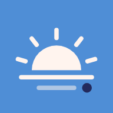

<!doctype html>
<html lang="ja">
<head>
<meta charset="utf-8">
<meta name="viewport" content="width=device-width, initial-scale=1, viewport-fit=cover">
<meta name="apple-mobile-web-app-capable" content="yes">
<meta name="mobile-web-app-capable" content="yes">
<meta name="apple-mobile-web-app-status-bar-style" content="default">
<meta name="apple-mobile-web-app-title" content="まいにち">
<meta name="theme-color" content="#F5EFEB">
<meta name="description" content="ひび手帳の今日の予定と、ひび手帳のことを話せるAI">
<title>まいにち｜ひび手帳</title>
<link rel="manifest" href="manifest.webmanifest">
<link rel="apple-touch-icon" href="icons/icon-180.png">
<link rel="icon" href="icons/icon-192.png">
<link rel="preconnect" href="https://fonts.googleapis.com">
<link rel="preconnect" href="https://fonts.gstatic.com" crossorigin>
<link rel="stylesheet" href="https://fonts.googleapis.com/css2?family=Zen+Maru+Gothic:wght@400;500;700&display=swap">
<style>
/* ひび手帳と同じ色で、テーマカラーはひび手帳のブルー。Structured のように、色つきのカプセルを縦の線でつないで1日を並べる */
:root{
  --bg:#F5EFEB; --surface:#FFFFFF; --surface-2:#FAF6F3; --ink:#232A5C; --ink-2:#6D7092; --ink-3:#A9AABD;
  --line:#E2D9D2; --sep-strong:rgba(0,0,0,.16); --accent:#4F8ED6; --sun:#D45850; --overlay:rgba(24,26,48,.32); --shadow:0 6px 22px rgba(35,42,92,.08);
  --f-body:ui-rounded,"SF Pro Rounded","Hiragino Sans","Zen Maru Gothic","Noto Sans JP",system-ui,sans-serif;
}
@media (prefers-color-scheme: dark){
  :root:not([data-theme="light"]){
    --bg:#141414; --surface:#252526; --surface-2:#1C1C1D; --ink:#F2F1F4; --ink-2:#BDBDC6; --ink-3:#A0A0AA;
    --line:#3A3A3F; --sep-strong:rgba(255,255,255,.2); --accent:#6FA8E8; --sun:#F07D74; --overlay:rgba(0,0,0,.6); --shadow:none; color-scheme:dark;
  }
}
:root[data-theme="dark"]{
  --bg:#141414; --surface:#252526; --surface-2:#1C1C1D; --ink:#F2F1F4; --ink-2:#BDBDC6; --ink-3:#A0A0AA;
  --line:#3A3A3F; --sep-strong:rgba(255,255,255,.2); --accent:#6FA8E8; --sun:#F07D74; --overlay:rgba(0,0,0,.6); --shadow:none; color-scheme:dark;
}
*,*::before,*::after{box-sizing:border-box}
html{height:100%;background:var(--bg)}
body{min-height:100%;margin:0;background:var(--bg);color:var(--ink);font-family:var(--f-body);font-size:15px;line-height:1.5;
  -webkit-font-smoothing:antialiased;-webkit-tap-highlight-color:transparent;-webkit-text-size-adjust:100%}
[hidden]{display:none!important}
button{font:inherit;color:inherit;background:none;border:0;padding:0;cursor:pointer;text-align:inherit}
button:focus-visible,input:focus-visible{outline:2px solid var(--accent);outline-offset:2px}
input{font:inherit;font-size:16px;color:var(--ink)}
svg{display:block}
.ico{width:22px;height:22px;fill:none;stroke:currentColor;stroke-width:1.8;stroke-linecap:round;stroke-linejoin:round}
.num{font-variant-numeric:tabular-nums}
@media (hover:none){button:not(:disabled):not(.tb):active{opacity:.55}}

#app,.page{max-width:560px;margin:0 auto;padding:calc(env(safe-area-inset-top,0px) + 40px) 16px calc(env(safe-area-inset-bottom,0px) + 110px)}

/* header */
.hd{display:flex;align-items:flex-start;justify-content:space-between;gap:12px;margin-bottom:6px}
.hd .d{font-size:14px;font-weight:700;color:var(--accent);letter-spacing:.02em}
.hd h1{margin:0;font-size:34px;line-height:1.15;font-weight:800;letter-spacing:.01em}
.hd .hol{display:inline-block;margin-left:8px;font-size:12px;font-weight:700;color:var(--sun);vertical-align:3px}
.hd-btns{display:flex;gap:2px;margin-top:4px}
.icon-btn{width:40px;height:40px;display:grid;place-items:center;border-radius:12px;color:var(--ink-2)}
.icon-btn.spin .ico{animation:spin .9s linear infinite}
@keyframes spin{to{transform:rotate(360deg)}}
.sum{display:flex;align-items:center;gap:12px;margin:10px 0 16px;padding:12px 14px;background:var(--surface);border-radius:16px;box-shadow:var(--shadow)}
.ring{flex:none;width:44px;height:44px}
.ring circle{fill:none;stroke-width:5}
.ring .bgc{stroke:var(--line)} .ring .fg{stroke:var(--accent);stroke-linecap:round;transition:stroke-dashoffset .5s}
.sum b{display:block;font-size:15px}
.sum small{display:block;font-size:12.5px;color:var(--ink-2)}

/* all-day chips */
.ad{display:flex;flex-wrap:wrap;gap:8px;margin:0 0 14px}
.chip{display:flex;align-items:center;gap:7px;max-width:100%;padding:5px 12px 5px 5px;border-radius:999px;background:var(--surface);box-shadow:var(--shadow);font-size:13.5px;font-weight:600}
.chip .c{flex:none;width:24px;height:24px;border-radius:50%;display:grid;place-items:center;background:var(--c);color:#fff}
.chip .c .ico{width:15px;height:15px;stroke-width:2.1}
.chip span{min-width:0;overflow:hidden;text-overflow:ellipsis;white-space:nowrap}
.chip.over{color:var(--sun)}

/* timeline */
.tl{position:relative}
.row{position:relative;display:grid;grid-template-columns:52px 64px minmax(0,1fr);align-items:center;column-gap:6px;padding:0}
.row .t{align-self:start;padding:6px 4px 0 0;text-align:right;font-size:12px;font-weight:600;color:var(--ink-2);line-height:1.25}
.rail{position:relative;align-self:stretch;display:flex;justify-content:center;align-items:flex-start}
/* the line joining the items: each item's own color, fading into the next one's between them */
/* Structured-style links (same as ひび手帳): dotted, centred on the pills, fading from one item's color into the next (drawn by drawLinks) */
.tl-links{position:absolute;left:0;top:0;width:100%;height:100%;pointer-events:none;overflow:visible;z-index:0}
.tl-links .tl-near{stroke:color-mix(in srgb,var(--ink-3) 55%,var(--surface))}
.row.it{padding:6px 0}
.row.it .rail{align-items:center}
.pill{position:relative;z-index:1;width:58px;border-radius:29px;background:color-mix(in srgb,var(--c) 84%,#fff);color:#fff;display:grid;place-items:center;overflow:hidden;
  box-shadow:0 3px 10px color-mix(in srgb,var(--c) 35%,transparent)}
.pill .ico{position:relative;z-index:1;width:26px;height:26px;stroke-width:2}
/* 同じ作り（ひび手帳のタイムラインと同じ）：始まっていない予定は灰色の丸にアイコンだけ色、始まった予定は色つき */
.row.it.future .pill{background:#E6E0DA;color:var(--c);box-shadow:none;filter:none}
@media (prefers-color-scheme: dark){:root:not([data-theme="light"]) .row.it.future .pill{background:#3D3D3F}}
:root[data-theme="dark"] .row.it.future .pill{background:#3D3D3F}
/* now inside this item: the part still to come is paler */
.pill .rest{position:absolute;left:0;right:0;bottom:0;background:rgba(255,255,255,.5)}
.body{display:block;min-width:0;padding:4px 0}
.body .m{display:block;font-size:12.5px;color:var(--ink-2)}
.body .tt{display:block;font-size:17px;font-weight:700;line-height:1.35;overflow-wrap:anywhere}
.row.done .tt{text-decoration:line-through;text-decoration-thickness:1.5px;color:var(--ink-3)}
.tag{display:inline-block;margin-left:6px;padding:0 7px;border-radius:999px;font-size:11px;font-weight:700;vertical-align:2px;background:var(--surface-2);color:var(--ink-2)}
.tag.now{background:var(--accent);color:#fff}
.tag.pend{background:none;color:var(--accent);box-shadow:inset 0 0 0 1.5px var(--accent)}
.row.it.pending .pill{opacity:.6;box-shadow:none}
.tag.rt{background:color-mix(in srgb,var(--c) 18%,transparent);color:var(--c)}
.tag .ico{display:inline-block;width:11px;height:11px;stroke-width:2.4;vertical-align:-1px;margin-right:2px}
/* free time between items */
.row.gap .body{font-size:12px;color:var(--ink-3);padding:6px 0}
/* the now line */
.row.now{padding:2px 0}
.row.now .t{padding-top:0;align-self:center;color:var(--accent);font-weight:700}
.row.now .dot{position:relative;z-index:1;width:12px;height:12px;border-radius:50%;background:var(--accent);margin:auto;box-shadow:0 0 0 4px color-mix(in srgb,var(--accent) 22%,transparent)}
.row.now .rail{align-items:center}
.row.now .ln{grid-column:3/-1;height:2px;border-radius:1px;background:var(--accent)}
.empty{text-align:center;color:var(--ink-2);padding:44px 12px;line-height:1.8}
.empty .ico{width:40px;height:40px;margin:0 auto 10px;color:var(--ink-3)}
.foot{margin-top:22px;text-align:center;font-size:12px;color:var(--ink-3)}
.foot.err{color:var(--sun)}

/* first screen (not connected yet) */
.hello{padding:30px 6px;text-align:center}
.hello .logo{width:84px;height:84px;border-radius:22px;margin:10px auto 18px;box-shadow:var(--shadow)}
.hello h2{margin:0 0 8px;font-size:22px}
.hello p{margin:0 0 20px;color:var(--ink-2);font-size:14px;line-height:1.8}
.btn{display:flex;align-items:center;justify-content:center;gap:8px;width:100%;padding:14px;border-radius:14px;font-weight:700;background:var(--surface);box-shadow:var(--shadow);margin-top:10px}
.btn.primary{background:var(--accent);color:#fff}
.btn.ghost{background:none;box-shadow:inset 0 0 0 1.5px var(--line);color:var(--ink-2)}
.note{font-size:12.5px;color:var(--ink-2);line-height:1.7;text-align:left}

/* bottom sheet */
.ov{position:fixed;inset:0;z-index:10;background:var(--overlay);opacity:0;transition:opacity .25s}
.ov.show{opacity:1}
.sheet{position:fixed;left:0;right:0;bottom:0;z-index:11;max-width:560px;margin:0 auto;max-height:86vh;overflow-y:auto;background:var(--bg);
  border-radius:22px 22px 0 0;padding:0 0 calc(env(safe-area-inset-bottom,0px) + 22px);transform:translateY(100%);transition:transform .32s cubic-bezier(.2,.9,.25,1)}
.sheet.show{transform:none}
.sh-bar{display:flex;justify-content:flex-end;padding:12px 14px 0}
.sh-bar button{font-weight:700;color:var(--accent);padding:4px 6px}
.sh-in{padding:0 18px}
.dt-head{display:flex;align-items:center;gap:14px;margin:4px 0 18px}
.dt-head .pill{width:56px;height:56px;border-radius:28px;flex:none}
.dt-head .pill .ico{width:26px;height:26px}
.dt-head b{display:block;font-size:20px;line-height:1.35;overflow-wrap:anywhere}
.dt-head small{display:block;color:var(--ink-2);font-size:13.5px}
.card{background:var(--surface);border-radius:16px;box-shadow:var(--shadow);padding:4px 14px;margin-bottom:12px}
.li{display:flex;align-items:flex-start;gap:12px;padding:11px 0;border-bottom:1px solid var(--line);font-size:14.5px}
.li:last-child{border-bottom:0}
.li>.ico{flex:none;width:20px;height:20px;color:var(--ink-2);margin-top:1px}
.li span{min-width:0;white-space:pre-wrap;overflow-wrap:anywhere}
.li.on{color:var(--ink-3);text-decoration:line-through}
.li .box{flex:none;width:20px;height:20px;border-radius:6px;border:2px solid var(--c);display:grid;place-items:center;color:#fff;margin-top:1px}
.li .box .ico{width:13px;height:13px;stroke-width:3}
.li.on .box{background:var(--c)}
.li:not(.on) .box .ico{display:none}
.lbl{font-size:12px;font-weight:700;color:var(--ink-2);margin:16px 4px 6px}
.tg{display:flex;align-items:center;justify-content:space-between;gap:12px;padding:12px 14px;font-size:14.5px;font-weight:600}
.tg small{display:block;font-size:12px;font-weight:400;color:var(--ink-2);margin-top:2px}
.tg input{flex:none;width:22px;height:22px;accent-color:var(--accent)}
.fld input{width:100%;padding:12px 14px;border-radius:12px;border:1.5px solid var(--line);background:var(--surface)}

.rt-sum{background:var(--surface);border-radius:22px;box-shadow:var(--shadow);padding:16px 18px;margin-bottom:12px}
.rt-sum .od{display:flex;align-items:center;gap:8px;font-size:18px;font-weight:700;flex-wrap:wrap}
.rt-sum .od .ico{width:18px;height:18px;color:var(--ink-3)}
.rt-sum .tm{font-size:32px;font-weight:700;letter-spacing:-.01em;margin:6px 0 2px}
.rt-sum .mt{font-size:13px;color:var(--ink-2);display:flex;flex-wrap:wrap;gap:4px 12px}
.rt-tags{display:flex;gap:6px;margin-top:8px}
.rt-tags span{font-size:11.5px;font-weight:700;padding:3px 10px;border-radius:99px;color:#fff;background:var(--c)}
.rt-steps{list-style:none;margin:0;padding:6px 16px;background:var(--surface);border-radius:22px;box-shadow:var(--shadow)}
.rt-steps li{display:grid;grid-template-columns:48px 18px minmax(0,1fr);gap:10px;align-items:stretch}
.rt-steps .t{font-size:12.5px;text-align:right;color:var(--ink-2);display:flex;flex-direction:column;justify-content:center;line-height:1.35}
.rt-steps .t b{font-size:14.5px;color:var(--ink)}
.rt-steps .mk{position:relative;display:flex;justify-content:center}
.rt-steps .st .mk::after{content:"";align-self:center;width:14px;height:14px;border-radius:50%;background:var(--surface);border:3px solid var(--ink);z-index:1}
.rt-steps .st.first .mk::after,.rt-steps .st.last .mk::after{border-color:var(--accent);background:var(--accent)}
.rt-steps .st .nm{font-size:16px;font-weight:700;padding:12px 0;align-self:center}
.rt-steps .ac .mk::before{content:"";width:6px;border-radius:3px;background:var(--c,var(--accent))}
.rt-steps .ac.walk .mk::before{width:0;border-left:4px dotted var(--ink-3);background:none}
.rt-steps .ac .bd{padding:6px 0 10px;font-size:13px;color:var(--ink-2)}
.rt-steps .ac .ln{font-size:14px;font-weight:700;color:var(--ink);display:flex;align-items:center;gap:6px}
.rt-steps .ac .ln::before{content:"";width:9px;height:9px;border-radius:50%;background:var(--c,var(--accent));flex:none}
.rt-steps .ac.walk .ln::before{display:none}
.rt-steps details{margin-top:4px}
.rt-steps summary{cursor:pointer;color:var(--accent);font-weight:700;font-size:12.5px}
.rt-steps details ul{list-style:none;padding:0;margin:4px 0 0}
.rt-steps details li{display:flex;gap:10px;font-size:12.5px;padding:2px 0}
/* launch animation: the icon's sunrise plays on the blue, then the app shows (like ひび手帳's "h") */
/* launch animation 「夜明け」: the screen turns from night navy to the morning blue, the stars fade as the icon's sun rises */
#splash{position:fixed;inset:0;z-index:200;display:grid;place-items:center;overflow:hidden;background:#4F8ED6;animation:spDawn 1.3s ease .15s both;transition:opacity .45s ease,transform .5s cubic-bezier(.3,.8,.3,1)}
@keyframes spDawn{from{background-color:#141A3D}to{background-color:#4F8ED6}}
/* everything waits on the night sky until the first frame is really on the screen (the app's script runs before the first paint) */
#splash:not(.go),#splash:not(.go) *{animation-play-state:paused!important}
#splash svg{width:min(60vw,270px);height:auto;overflow:visible}
#splash.out{opacity:0;transform:scale(1.08);pointer-events:none}
.sp-star{position:absolute;width:var(--s,3px);height:var(--s,3px);border-radius:50%;background:#FFF4EE;box-shadow:0 0 6px rgba(255,244,238,.8);opacity:0;animation:spTwinkle 1.25s ease forwards}
@keyframes spTwinkle{0%{opacity:0}25%{opacity:.95}70%{opacity:.6}100%{opacity:0}}
.sp-cr{stroke:#FFF4EE;stroke-width:20;stroke-linecap:round;fill:none}
.sp-hz{transform-box:fill-box;transform-origin:center;transform:scaleX(0);animation:spGrow .6s cubic-bezier(.5,0,.2,1) .2s forwards}
.sp-sun{fill:#FFF4EE;transform:translateY(150px);animation:spRise 1s cubic-bezier(.25,.8,.25,1) .45s forwards}
.sp-halo{opacity:0;animation:spHalo 1.4s ease .5s forwards}
@keyframes spHalo{0%{opacity:0}50%{opacity:.9}100%{opacity:0}}
/* hidden until it starts drawing: Safari paints the round end of a line that is not drawn yet as a dot */
.sp-ray{stroke-dasharray:1;stroke-dashoffset:1;opacity:0;animation:spDraw .3s ease-out forwards}
.sp-low{opacity:.55;transform-box:fill-box;transform-origin:left;transform:scaleX(0);animation:spGrow .35s cubic-bezier(.5,0,.2,1) 1.35s forwards}
.sp-dot{fill:#232A5C;transform-box:fill-box;transform-origin:center;transform:scale(0);animation:spDot .45s cubic-bezier(.3,1.7,.5,1) 1.55s forwards}
@keyframes spGrow{to{transform:scaleX(1)}}
@keyframes spRise{to{transform:none}}
@keyframes spDraw{0%{stroke-dashoffset:1;opacity:1}100%{stroke-dashoffset:0;opacity:1}}
@keyframes spDot{0%{transform:scale(0)}60%{transform:scale(1.25)}100%{transform:scale(1)}}
@media (prefers-reduced-motion:reduce){#splash{animation:none}.sp-star,.sp-halo{display:none}.sp-hz,.sp-sun,.sp-low,.sp-dot{animation:none;transform:none}.sp-ray{animation:none;stroke-dashoffset:0;opacity:1}#splash{transition:opacity .3s}#splash.out{transform:none}}
/* bottom bar (from communication) */
#tabbar{position:fixed;left:0;right:0;bottom:0;z-index:8;display:flex;justify-content:center;padding:0 12px max(10px,env(safe-area-inset-bottom));pointer-events:none}
/* two tabs only: the bar is two tabs wide (same as iti) */
#tabbar ul{pointer-events:auto;position:relative;display:flex;height:62px;width:200px;margin:0;padding:4px;list-style:none;border-radius:31px;
  background:color-mix(in srgb,var(--bg) 58%,transparent);-webkit-backdrop-filter:blur(20px);backdrop-filter:blur(20px);transform:translateZ(0);
  box-shadow:0 8px 32px rgba(0,0,0,.14),inset 0 0 0 .5px var(--sep-strong),inset 0 1px 0 rgba(255,255,255,.35)}
.tb-hl{position:absolute;top:4px;bottom:4px;left:4px;width:calc((100% - 8px) / 2);pointer-events:none;transition:transform 620ms cubic-bezier(.34,1.45,.5,1)}
.tb-hl>span{display:block;width:100%;height:100%;border-radius:999px;background:color-mix(in srgb,var(--ink) 10%,transparent);box-shadow:inset 0 0 0 .5px var(--sep-strong)}
.tb-hl>span.jelly{animation:jelly 560ms cubic-bezier(.3,.9,.4,1) both}
@keyframes jelly{0%{transform:scale(1,1)}28%{transform:scale(1.32,.84)}58%{transform:scale(.94,1.1)}80%{transform:scale(1.03,.98)}100%{transform:scale(1,1)}}
#tabbar li{position:relative;flex:1;min-width:0}
.tb{width:100%;height:100%;display:flex;flex-direction:column;align-items:center;justify-content:center;gap:2px;border-radius:999px;font-size:10px;font-weight:700;color:var(--ink-3);transition:color .2s,transform .2s}
.tb:active{transform:scale(.9)}
.tb[aria-current="page"]{color:var(--ink)}
.tb .ico{width:22px;height:22px;stroke-width:1.8}
.tb[aria-current="page"] .ico{stroke-width:2.3}

/* AI */
.ai-card{display:flex;gap:12px;align-items:flex-start;margin:10px 0 16px;padding:14px;background:var(--surface);border-radius:16px;box-shadow:var(--shadow)}
.ai-card>.ico{flex:none;width:26px;height:26px;color:var(--accent);margin-top:1px}
.ai-card b{display:block;font-size:15px}
.ai-card p{margin:3px 0 0;font-size:12.5px;color:var(--ink-2);line-height:1.65}
.ai-card .btn{margin-top:10px;padding:11px}
.ai-card .bar{height:6px;border-radius:3px;background:var(--line);overflow:hidden;margin-top:10px}
.ai-card .bar i{display:block;height:100%;background:var(--accent);border-radius:3px;transition:width .3s}
.ai-card.slim{padding:9px 14px;align-items:center}
.ai-card.slim>.ico{width:20px;height:20px;margin:0}
.ai-card.slim b{font-size:13px;font-weight:600;color:var(--ink-2)}
.sugg{display:flex;flex-wrap:wrap;gap:8px;margin:4px 0 16px}
.sugg button{padding:8px 13px;border-radius:999px;background:var(--surface);box-shadow:var(--shadow);font-size:13.5px;font-weight:600}
.msgs{display:flex;flex-direction:column;gap:10px;padding-bottom:84px}
.msg{max-width:86%;padding:10px 14px;border-radius:20px;font-size:15px;line-height:1.6;white-space:pre-wrap;overflow-wrap:anywhere}
.msg.me{align-self:flex-end;background:var(--accent);color:#fff;border-bottom-right-radius:6px}
.msg.ai{align-self:flex-start;background:var(--surface);box-shadow:var(--shadow);border-bottom-left-radius:6px}
.msg.ai.wait{color:var(--ink-3)}
.msg.ai.err{color:var(--sun)}
.msg .src{display:flex;flex-wrap:wrap;gap:5px;margin-top:8px;white-space:normal}
.msg .src span{font-size:11px;font-weight:700;padding:2px 8px;border-radius:999px;background:var(--surface-2);color:var(--ink-2)}
.msg.asking{width:86%;white-space:normal}
.cf b{display:block;font-size:15px;margin-bottom:8px}
.cf label{display:block;font-size:12px;font-weight:700;color:var(--ink-2);margin-top:8px}
.cf .inp{display:block;width:100%;margin-top:4px;padding:9px 12px;border-radius:12px;border:1.5px solid var(--line);background:var(--bg);font-size:16px;color:var(--ink)}
/* iPhone gives date / time fields their own minimum width: without this they stick out of the card */
.cf input[type="date"].inp,.cf input[type="time"].inp{-webkit-appearance:none;appearance:none;min-width:0;max-width:100%;min-height:44px;text-align:left}
.cf input[type="date"]::-webkit-date-and-time-value,.cf input[type="time"]::-webkit-date-and-time-value{text-align:left;margin:0}
.msg.asking .cf{min-width:0;overflow:hidden}
.cf .cf-ad{display:flex;align-items:center;gap:8px;font-size:14px;color:var(--ink)}
.cf .cf-ad input{flex:none;width:20px;height:20px;accent-color:var(--accent)}
.cf .cf-sub{margin:5px 2px 0;font-size:11.5px;color:var(--ink-3)}
.seg{display:flex;gap:4px;margin-top:4px;padding:3px;border-radius:12px;background:var(--bg);box-shadow:inset 0 0 0 1.5px var(--line)}
.seg button{flex:1;min-width:0;padding:8px 2px;border-radius:9px;font-size:13px;font-weight:700;color:var(--ink-2);text-align:center;white-space:nowrap}
.seg button[aria-checked="true"]{background:var(--accent);color:#fff}
.cf-tm{display:flex;align-items:center;gap:8px;margin-top:8px}
.cf-tm .inp{margin:0;min-width:0;flex:1}
.cf-btns{display:flex;gap:8px;margin-top:12px}
.cf-btns .btn{margin:0;padding:11px}
.cf p{margin:8px 0 0;font-size:12px;color:var(--ink-3)}
.msg.rt{width:92%;max-width:92%;white-space:pre-wrap}
.rtc{white-space:normal;margin-top:10px;padding:12px;border-radius:16px;background:var(--bg);box-shadow:inset 0 0 0 1.5px var(--line)}
.rtc.sel{box-shadow:inset 0 0 0 2px var(--accent)}
.rtc-h{display:flex;align-items:center;gap:6px;flex-wrap:wrap}
.rtc-h b{font-size:19px;font-weight:800;margin-right:4px}
.rtc-h i{font-style:normal;font-size:11px;font-weight:700;padding:2px 8px;border-radius:999px;color:#fff;background:#8B8FA8}
.rtc-h .tg-早{background:#E9776F}.rtc-h .tg-安{background:#5BB07A}.rtc-h .tg-楽{background:#4AA3C8}
.rtc-m{font-size:12.5px;color:var(--ink-2);margin-top:2px}
.rtc-l{display:flex;flex-wrap:wrap;gap:5px;margin-top:8px}
.rtc-l span{font-size:11.5px;font-weight:700;padding:2px 9px;border-radius:999px;background:color-mix(in srgb,var(--c) 16%,transparent);color:var(--ink)}
.rtc details{margin-top:8px}
.rtc summary{cursor:pointer;color:var(--accent);font-weight:700;font-size:12.5px}
.rtc .rt-steps{box-shadow:none;background:var(--surface);margin-top:6px;padding:4px 10px}
.rtc .rt-steps .st .nm{font-size:14px;padding:8px 0}
.rtc-b{display:flex;gap:8px;margin-top:10px;flex-wrap:wrap}
.rtc-b .btn{flex:1;min-width:0;margin:0;padding:10px;font-size:13px}
.msg .tool{display:block;font-size:11.5px;color:var(--ink-3);margin-bottom:4px}
.composer{position:fixed;left:0;right:0;bottom:calc(max(10px,env(safe-area-inset-bottom)) + 70px);z-index:7;display:flex;justify-content:center;padding:0 12px;pointer-events:none}
.composer form{pointer-events:auto;display:flex;align-items:flex-end;gap:8px;width:min(28rem,calc(100vw - 1.5rem));padding:6px 6px 6px 16px;border-radius:26px;
  background:color-mix(in srgb,var(--surface) 82%,transparent);-webkit-backdrop-filter:blur(20px);backdrop-filter:blur(20px);box-shadow:0 6px 24px rgba(0,0,0,.12),inset 0 0 0 .5px var(--sep-strong)}
.composer textarea{flex:1;min-width:0;border:0;background:none;resize:none;font:inherit;font-size:16px;line-height:1.45;color:var(--ink);padding:8px 0;max-height:120px;outline:none}
.composer .send{flex:none;width:38px;height:38px;border-radius:50%;display:grid;place-items:center;background:var(--accent);color:#fff}
.composer .send .ico{width:20px;height:20px;stroke-width:2.4}
.composer .send:disabled{opacity:.35}
#toast{position:fixed;left:50%;bottom:calc(env(safe-area-inset-bottom,0px) + 150px);z-index:20;transform:translate(-50%,20px);opacity:0;pointer-events:none;
  max-width:calc(100% - 32px);padding:10px 16px;border-radius:14px;background:var(--ink);color:var(--bg);font-size:13.5px;transition:opacity .25s,transform .25s}
#toast.show{opacity:1;transform:translate(-50%,0)}
</style>
</head>
<body>
<div id="splash" aria-hidden="true"><i class="sp-star" style="left:12%;top:14%;--s:3px;animation-delay:0.05s"></i><i class="sp-star" style="left:26%;top:8%;--s:2px;animation-delay:0.10s"></i><i class="sp-star" style="left:41%;top:18%;--s:4px;animation-delay:0.15s"></i><i class="sp-star" style="left:58%;top:10%;--s:2px;animation-delay:0.20s"></i><i class="sp-star" style="left:73%;top:16%;--s:3px;animation-delay:0.25s"></i><i class="sp-star" style="left:88%;top:7%;--s:2px;animation-delay:0.30s"></i><i class="sp-star" style="left:18%;top:30%;--s:2px;animation-delay:0.35s"></i><i class="sp-star" style="left:34%;top:36%;--s:3px;animation-delay:0.40s"></i><i class="sp-star" style="left:64%;top:28%;--s:2px;animation-delay:0.45s"></i><i class="sp-star" style="left:82%;top:33%;--s:4px;animation-delay:0.50s"></i><i class="sp-star" style="left:50%;top:24%;--s:2px;animation-delay:0.55s"></i><i class="sp-star" style="left:8%;top:44%;--s:3px;animation-delay:0.60s"></i><i class="sp-star" style="left:93%;top:46%;--s:2px;animation-delay:0.65s"></i><i class="sp-star" style="left:28%;top:52%;--s:2px;animation-delay:0.70s"></i><i class="sp-star" style="left:71%;top:50%;--s:3px;animation-delay:0.75s"></i><svg viewBox="80 110 352 320">
  <defs><clipPath id="sp-c"><rect x="0" y="0" width="512" height="288"/></clipPath>
    <radialGradient id="sp-g"><stop offset="0" stop-color="#FFE3B8" stop-opacity=".55"/><stop offset=".55" stop-color="#FFE3B8" stop-opacity=".18"/><stop offset="1" stop-color="#FFE3B8" stop-opacity="0"/></radialGradient></defs>
  <circle class="sp-halo" cx="256" cy="288" r="190" fill="url(#sp-g)"/>
  <g clip-path="url(#sp-c)"><circle class="sp-sun" cx="256" cy="288" r="112"/></g>
  <g class="sp-cr"><line class="sp-ray" style="animation-delay:1.10s" pathLength="1" x1="256.0" y1="142.0" x2="256.0" y2="106.0"/><line class="sp-ray" style="animation-delay:1.19s" pathLength="1" x1="345.9" y1="173.0" x2="368.1" y2="144.6"/><line class="sp-ray" style="animation-delay:1.19s" pathLength="1" x1="166.1" y1="173.0" x2="143.9" y2="144.6"/><line class="sp-ray" style="animation-delay:1.28s" pathLength="1" x1="396.3" y1="247.8" x2="430.9" y2="237.8"/><line class="sp-ray" style="animation-delay:1.28s" pathLength="1" x1="115.7" y1="247.8" x2="81.1" y2="237.8"/></g>
  <line class="sp-cr sp-hz" x1="96" y1="320" x2="416" y2="320"/>
  <line class="sp-cr sp-low" x1="176" y1="368" x2="336" y2="368"/>
  <circle class="sp-dot" cx="394" cy="368" r="22"/>
</svg></div>
<script>
(function () {
  var el = document.getElementById('splash'), off = false;
  try { off = localStorage.getItem('kyou.splash') === 'off'; } catch (e) {}
  if (off || (navigator.webdriver && !/[?&]splash\b/.test(location.search))) { el.remove(); return; }
  // a Home Screen app starts below the status bar: lift the animation so it sits in the middle of the whole screen
  var sa = navigator.standalone || (window.matchMedia && matchMedia('(display-mode: standalone)').matches), gap = screen.height - window.innerHeight;
  if (sa && gap > 0 && gap < 120) el.style.paddingBottom = gap + 'px';
  // the strips above and below the page (status bar, home bar) show the page's own color: make them blue while it plays
  var night = !(window.matchMedia && matchMedia('(prefers-reduced-motion: reduce)').matches), html = document.documentElement, body = document.body;
  html.style.background = body.style.background = night ? '#141A3D' : '#4F8ED6';
  var mt = document.querySelector('meta[name="theme-color"]'); if (mt) mt.setAttribute('content', night ? '#141A3D' : '#4F8ED6');
  // start when the first frame is painted: two frames later, so the night sky is seen from its beginning
  requestAnimationFrame(function () { requestAnimationFrame(function () {
    el.classList.add('go'); window.__spAt = performance.now();
    if (!night) return;
    html.style.transition = body.style.transition = 'background-color 1.3s ease .15s'; html.style.background = body.style.background = '#4F8ED6';
    setTimeout(function () { if (mt && document.getElementById('splash')) mt.setAttribute('content', '#4F8ED6'); }, 800);
  }); });
})();
</script>
<div id="app"></div>
<div id="ai" class="page" hidden></div>
<!-- the bottom bar of communication (Jam): a round glass bar whose highlight slides over with a little stretch -->
<nav id="tabbar" aria-label="画面の切り替え"><ul>
  <span class="tb-hl" aria-hidden="true"><span></span></span>
  <li><button class="tb" data-act="tab" data-tab="today"></button></li>
  <li><button class="tb" data-act="tab" data-tab="ai"></button></li>
</ul></nav>
<div id="toast" role="status"></div>
<script>
(() => {
'use strict';
/* ================= まいにち：ひび手帳の「今日」と、ひび手帳のことを話せる AI =================
   データはひび手帳が Google ドライブ（アプリ専用の場所）に自動保存している hibi.json を読むだけ。
   ここからは何も書き込まない（月表示・日記・編集はひび手帳で）。
   ログインはひび手帳と同じ、乗換案内の Worker（/hibi-auth/）を通す。 */
const $ = (s, r = document) => r.querySelector(s);
const esc = s => String(s ?? '').replace(/[&<>"']/g, c => ({'&':'&amp;','<':'&lt;','>':'&gt;','"':'&quot;',"'":'&#39;'}[c]));
const pad = n => String(n).padStart(2, '0');
const iso = d => `${d.getFullYear()}-${pad(d.getMonth() + 1)}-${pad(d.getDate())}`;
const P = s => { const [y, m, d] = s.split('-').map(Number); return new Date(y, m - 1, d); };
const addDays = (s, n) => { const d = P(s); d.setDate(d.getDate() + n); return iso(d); };
const diffDays = (a, b) => Math.round((P(b) - P(a)) / 864e5);
const todayISO = () => iso(new Date());
const nowMin = () => { const d = new Date(); return d.getHours() * 60 + d.getMinutes(); };
const WD = ['日', '月', '火', '水', '木', '金', '土'];
const wd = s => P(s).getDay();
const hhmm = m => `${pad(Math.floor(m / 60) % 24)}:${pad(m % 60)}`;
const toMin = t => { const [h, m] = String(t || '0:0').split(':').map(Number); return (h || 0) * 60 + (m || 0); };
const hm = t => String(t || '').replace(/^0(\d)/, '$1');
const hmM = m => hm(hhmm(m));
const dur = m => m >= 60 ? `${Math.floor(m / 60)}時間${m % 60 ? (m % 60) + '分' : ''}` : `${m}分`;
const md = s => { const d = P(s); return `${d.getMonth() + 1}/${d.getDate()}`; };
const evLen = ev => { const x = toMin(ev.end) - toMin(ev.start); return x > 0 ? x : x + 1440; };
const multiDay = ev => !ev.allDay && !!ev.endDate && ev.endDate > ev.date;
const overnight = ev => !ev.allDay && !multiDay(ev) && toMin(ev.end) <= toMin(ev.start);
const evSpan = ev => ev.endDate && ev.endDate > ev.date && (ev.allDay || ev.calOnly) ? diffDays(ev.date, ev.endDate) : 0;
const okColor = c => typeof c === 'string' && (/^#[0-9a-f]{3,8}$/i.test(c) || /^rgba?\([\d.,\s%]+\)$/i.test(c));
const COLORS = ['#E07F78','#E9A23B','#6B88B0','#86B067','#9B4F6E','#4FA39B','#A68BD2','#8E8E96'];
const col = c => okColor(c) ? c : COLORS[2];
const SCH_C = '#5B8FC9', TODO_C = '#E07F78';

/* ================= icons（ひび手帳と同じ） ================= */
const IC = {
  alarm:'<circle cx="12" cy="13" r="7"/><path d="M12 10v3l2 2M5 4 2.5 6.5M19 4l2.5 2.5"/>',
  sun:'<circle cx="12" cy="12" r="4"/><path d="M12 2v2M12 20v2M4.9 4.9l1.4 1.4M17.7 17.7l1.4 1.4M2 12h2M20 12h2M4.9 19.1l1.4-1.4M17.7 6.3l1.4-1.4"/>',
  moon:'<path d="M20 14.5A8 8 0 0 1 9.5 4a8 8 0 1 0 10.5 10.5z"/>',
  cup:'<path d="M4 9h12v5a5 5 0 0 1-5 5H9a5 5 0 0 1-5-5zM16 10h1.5a2.5 2.5 0 0 1 0 5H16M8 3v3M12 3v3"/>',
  bolt:'<path d="M13 2 4 14h7l-1 8 9-12h-7z"/>',
  book:'<path d="M4 5a2 2 0 0 1 2-2h13v16H6a2 2 0 0 0-2 2zM4 21V5M8 7h7"/>',
  work:'<rect x="3" y="7" width="18" height="13" rx="2"/><path d="M9 7V5a2 2 0 0 1 2-2h2a2 2 0 0 1 2 2v2M3 13h18"/>',
  gym:'<path d="M6 7v10M18 7v10M3 10v4M21 10v4M6 12h12"/>',
  food:'<path d="M7 3v8M5 3v5a2 2 0 0 0 4 0V3M7 11v10M17 3c-2 0-3 2-3 5s1 4 3 4v9"/>',
  heart:'<path d="M12 20s-7-4.4-7-10a4 4 0 0 1 7-2.6A4 4 0 0 1 19 10c0 5.6-7 10-7 10z"/>',
  cart:'<path d="M3 4h2l2.4 11h10.2L20 8H6.2"/><circle cx="9" cy="19" r="1.5"/><circle cx="17" cy="19" r="1.5"/>',
  music:'<path d="M9 18V5l11-2v13"/><circle cx="6.5" cy="18" r="2.5"/><circle cx="17.5" cy="16" r="2.5"/>',
  leaf:'<path d="M5 19c0-9 6-14 15-14 0 9-5 15-14 15M5 19l7-7"/>',
  cake:'<path d="M4 21h16v-8H4zM4 16c2 1.5 4 1.5 6 0s4-1.5 6 0 3 1.5 4 0M12 13V9M12 6.5V5"/>',
  train:'<rect x="5" y="3" width="14" height="14" rx="3"/><path d="M5 11h14M8 21l2-4M16 21l-2-4"/>',
  pen:'<path d="M4 20h4L19 9l-4-4L4 16zM13.5 6.5l4 4"/>',
  people:'<circle cx="9" cy="8" r="3"/><path d="M3 20a6 6 0 0 1 12 0M16 5a3 3 0 0 1 0 6M18 20a5 5 0 0 0-3-4.6"/>',
  star:'<path d="M12 3l2.7 5.6 6.1.9-4.4 4.3 1 6.1L12 17l-5.4 2.9 1-6.1L3.2 9.5l6.1-.9z"/>',
  // UI
  search:'<circle cx="11" cy="11" r="7"/><path d="m20 20-4-4"/>',
  today:'<rect x="3" y="4" width="18" height="17" rx="3"/><path d="M3 9h18M8 2v4M16 2v4"/><circle cx="8" cy="13.5" r=".6"/><circle cx="12" cy="13.5" r=".6"/><circle cx="16" cy="13.5" r=".6"/><circle cx="8" cy="17" r=".6"/><circle cx="12" cy="17" r=".6"/>',
  gear:'<circle cx="12" cy="12" r="3"/><path d="M19.4 15a1.7 1.7 0 0 0 .3 1.8l.1.1a2 2 0 1 1-2.8 2.8l-.1-.1a1.7 1.7 0 0 0-1.8-.3 1.7 1.7 0 0 0-1 1.5V21a2 2 0 1 1-4 0v-.1a1.7 1.7 0 0 0-1.1-1.5 1.7 1.7 0 0 0-1.8.3l-.1.1a2 2 0 1 1-2.8-2.8l.1-.1a1.7 1.7 0 0 0 .3-1.8 1.7 1.7 0 0 0-1.5-1H3a2 2 0 1 1 0-4h.1a1.7 1.7 0 0 0 1.5-1.1 1.7 1.7 0 0 0-.3-1.8l-.1-.1a2 2 0 1 1 2.8-2.8l.1.1a1.7 1.7 0 0 0 1.8.3H9a1.7 1.7 0 0 0 1-1.5V3a2 2 0 1 1 4 0v.1a1.7 1.7 0 0 0 1 1.5 1.7 1.7 0 0 0 1.8-.3l.1-.1a2 2 0 1 1 2.8 2.8l-.1.1a1.7 1.7 0 0 0-.3 1.8V9a1.7 1.7 0 0 0 1.5 1H21a2 2 0 1 1 0 4h-.1a1.7 1.7 0 0 0-1.5 1z"/>',
  plus:'<path d="M12 5v14M5 12h14"/>',
  check:'<path d="m5 12.5 4.5 4.5L19 7.5"/>',
  left:'<path d="m15 18-6-6 6-6"/>',
  right:'<path d="m9 18 6-6-6-6"/>',
  camera:'<path d="M4 8h3l2-3h6l2 3h3v11H4z"/><circle cx="12" cy="13" r="3.5"/>',
  cal:'<rect x="3" y="4" width="18" height="17" rx="3"/><path d="M3 9h18M8 2v4M16 2v4"/>',
  list:'<circle cx="5" cy="6" r="1.6"/><circle cx="5" cy="12" r="1.6"/><circle cx="5" cy="18" r="1.6"/><path d="M10 6h10M10 12h10M10 18h7"/>',
  journal:'<path d="M5 4h11a3 3 0 0 1 3 3v13H8a3 3 0 0 1-3-3z"/><path d="M5 17a3 3 0 0 1 3-3h11M9 8h6"/>',
  wave:'<path d="M3 12h2M7 8v8M11 5v14M15 9v6M19 7v10M21 12h0"/>',
  school:'<path d="M2 9.5 12 5l10 4.5L12 14z"/><path d="M6 11.5V16c0 1.4 2.7 3 6 3s6-1.6 6-3v-4.5M22 9.5V15"/>',
  play:'<path d="M7 5v14l12-7z"/>',
  mail:'<rect x="3" y="5" width="18" height="14" rx="2"/><path d="m3 7 9 6 9-6"/>',
  tv:'<rect x="3" y="5" width="18" height="12" rx="2"/><path d="M8 21h8M12 17v4"/>',
  home:'<path d="M3 11 12 4l9 7"/><path d="M5 10v10h14V10M10 20v-6h4v6"/>',
  shirt:'<path d="M8 4 4 7l2 4 2-1v10h8V10l2 1 2-4-4-3c-.5 1.5-2 2.5-4 2.5S8.5 5.5 8 4z"/>',
  phone:'<rect x="7" y="2" width="10" height="20" rx="2.5"/><path d="M11 18h2"/>',
  bath:'<path d="M3 12h18v3a5 5 0 0 1-5 5H8a5 5 0 0 1-5-5zM6 12V6a2 2 0 0 1 4 0M7 20l-1 2M17 20l1 2"/>',
  bag:'<path d="M5 8h14l-1 13H6zM9 8V6a3 3 0 0 1 6 0v2"/>',
  palette:'<path d="M12 3a9 9 0 1 0 0 18c1.2 0 2-.8 2-1.8 0-.5-.2-.9-.5-1.2-.3-.3-.5-.8-.5-1.2 0-1 .8-1.8 1.8-1.8H17a4 4 0 0 0 4-4c0-4.4-4-8-9-8z"/><circle cx="7.5" cy="11" r="1.1"/><circle cx="10" cy="7.5" r="1.1"/><circle cx="14.5" cy="7.5" r="1.1"/>',
  timer:'<circle cx="12" cy="13" r="8"/><path d="M12 13 9 9.5M9 2h6"/>',
  flip:'<path d="M4 9a8 8 0 0 1 14.3-3.3L20 8M20 4v4h-4M20 15a8 8 0 0 1-14.3 3.3L4 16M4 20v-4h4"/>',
  grid:'<path d="M4 4h16v16H4zM9.3 4v16M14.7 4v16M4 9.3h16M4 14.7h16"/>',
  down:'<path d="m6 9 6 6 6-6"/>',
  up:'<path d="m18 15-6-6-6 6"/>',
  more:'<circle cx="5" cy="12" r="1.3"/><circle cx="12" cy="12" r="1.3"/><circle cx="19" cy="12" r="1.3"/>',
  repeat:'<path d="M17 2l3 3-3 3"/><path d="M4 11V9a4 4 0 0 1 4-4h12"/><path d="M7 22l-3-3 3-3"/><path d="M20 13v2a4 4 0 0 1-4 4H4"/>',
  clock:'<circle cx="12" cy="12" r="9"/><path d="M12 7v5l3 2"/>',
  pause:'<path d="M8.5 5v14M15.5 5v14"/>',
  trash:'<path d="M4 7h16M10 11v6M14 11v6M6 7l1 13h10l1-13M9 7V4h6v3"/>',
  yen:'<path d="M6 4l6 8 6-8M12 12v8M7 13h10M7 17h10"/>',
  inbox:'<path d="M3 13h5l1.5 3h5l1.5-3h5"/><path d="M5.5 5h13L21 13v6H3v-6z"/>',
  x:'<path d="M6 6l12 12M18 6 6 18"/>',
  umbrella:'<path d="M3 12a9 9 0 0 1 18 0zM12 12v7a2 2 0 0 0 4 0M12 3v-1"/>',
  target:'<circle cx="12" cy="12" r="7"/><circle cx="12" cy="12" r="2"/><path d="M12 2v3M12 19v3M2 12h3M19 12h3"/>',
  lock:'<rect x="5" y="10" width="14" height="11" rx="3"/><path d="M8 10V7a4 4 0 0 1 8 0v3M12 14.5v2.5"/>',
  face:'<path d="M4 8V6a2 2 0 0 1 2-2h2M16 4h2a2 2 0 0 1 2 2v2M20 16v2a2 2 0 0 1-2 2h-2M8 20H6a2 2 0 0 1-2-2v-2M9 9v1.5M15 9v1.5M12 9v4h-1M9 16c1.7 1.3 4.3 1.3 6 0"/>',
  back:'<path d="M9 6h10a2 2 0 0 1 2 2v8a2 2 0 0 1-2 2H9l-6-6z"/><path d="m13 10 4 4M17 10l-4 4"/>',
  partly:'<path d="M8.5 3v1.3M3.3 8.2H2M4.8 4.6l.9.9M12.2 4.6l-.9.9M5.2 11.4A3.7 3.7 0 0 1 11.9 6.7"/><path d="M9.5 20h8a3.5 3.5 0 0 0 .3-7 5.5 5.5 0 0 0-10.4 1.3A3 3 0 0 0 9.5 20z"/>',
  drop:'<path d="M12 3s6 6.6 6 11a6 6 0 0 1-12 0c0-4.4 6-11 6-11z"/>',
  wind:'<path d="M3 8h10a3 3 0 1 0-3-3M3 12h15a3 3 0 1 1-3 3M3 16h7"/>',
  gauge:'<path d="M4 18a8 8 0 1 1 16 0"/><path d="m12 18 4-6"/>',
  sunrise:'<path d="M3 19h18M7 15a5 5 0 0 1 10 0M12 3v5M9.5 5.5 12 3l2.5 2.5"/>',
  sunset:'<path d="M3 19h18M7 15a5 5 0 0 1 10 0M12 3v5M9.5 5.5 12 8l2.5-2.5"/>',
  dice:'<rect x="7" y="7" width="14" height="14" rx="3"/><path d="M17 7V5.5A2.5 2.5 0 0 0 14.5 3h-9A2.5 2.5 0 0 0 3 5.5v9A2.5 2.5 0 0 0 5.5 17H7"/><circle cx="11" cy="11" r=".9" fill="currentColor"/><circle cx="17" cy="11" r=".9" fill="currentColor"/><circle cx="14" cy="14" r=".9" fill="currentColor"/><circle cx="11" cy="17" r=".9" fill="currentColor"/><circle cx="17" cy="17" r=".9" fill="currentColor"/>',
  share:'<path d="M12 15V3.5M7.5 7.5 12 3l4.5 4.5"/><path d="M6 11H5a1 1 0 0 0-1 1v8a1 1 0 0 0 1 1h14a1 1 0 0 0 1-1v-8a1 1 0 0 0-1-1h-1"/>',
  image:'<rect x="3" y="4" width="18" height="16" rx="3"/><circle cx="9" cy="10" r="2"/><path d="m21 16-5-5-9 9"/>',
  save:'<path d="M5 3h11l3 3v13a2 2 0 0 1-2 2H7a2 2 0 0 1-2-2z"/><path d="M8 3v5h7V3M8 21v-7h8v7"/>',
  pin:'<path d="M12 21s-7-6.2-7-11.5a7 7 0 0 1 14 0C19 14.8 12 21 12 21z"/><circle cx="12" cy="9.5" r="2.5"/>',
  cloud:'<path d="M7 18h10.5a4 4 0 0 0 .3-8A6 6 0 0 0 6.2 9.6 4.2 4.2 0 0 0 7 18z"/>',
  rain:'<path d="M7 15h10.5a3.5 3.5 0 0 0 .3-7A5.5 5.5 0 0 0 6.6 8 3.6 3.6 0 0 0 7 15zM8 18l-1 3M12 18l-1 3M16 18l-1 3"/>',
  snow:'<path d="M7 14h10.5a3.5 3.5 0 0 0 .3-7A5.5 5.5 0 0 0 6.6 7 3.6 3.6 0 0 0 7 14z"/><path d="M8 18v.01M12 18v.01M16 18v.01M10 21v.01M14 21v.01"/>',
  fog:'<path d="M4 9h16M3 13h18M5 17h14"/>',
  upload:'<path d="M12 15V4M7.5 8.5 12 4l4.5 4.5M4 15v4a1 1 0 0 0 1 1h14a1 1 0 0 0 1-1v-4"/>',
};
const ico = k => `<svg class="ico" viewBox="0 0 24 24" aria-hidden="true">${IC[k] || IC.star}</svg>`;
IC.refresh = '<path d="M20 11a8 8 0 1 0-2.3 5.7M20 4v7h-7"/>';
IC.sparkle = '<path d="M11 3.5l1.9 5.1L18 10.5l-5.1 1.9L11 17.5l-1.9-5.1L4 10.5l5.1-1.9z"/><path d="M18.5 14.5l.8 2.2 2.2.8-2.2.8-.8 2.2-.8-2.2-2.2-.8 2.2-.8z"/>';
IC.stop = '<rect x="7" y="7" width="10" height="10" rx="2"/>';

/* ================= storage ================= */
const GD_KEY = 'kyou.gd', DATA_KEY = 'kyou.data', HIBI_GD = 'hibi.gd', HIBI_DATA = 'hibi.v1';
const GD_API = 'https://www.googleapis.com/drive/v3/files';
const DEF_NORIKAE = 'https://norikae.gohanoishi.workers.dev';
const lsGet = k => { try { return JSON.parse(localStorage.getItem(k) || 'null'); } catch (e) { return null; } };
const lsSet = (k, v) => { try { localStorage.setItem(k, JSON.stringify(v)); return true; } catch (e) { return false; } };
let gd = lsGet(GD_KEY) || {};
const gdPut = o => { gd = { ...gd, ...o }; lsSet(GD_KEY, gd); };
// what the timeline and the AI need (the diary's words only: no photos, no songs)
const DATA_V = 6;
let D = lsGet(DATA_KEY); // { S, at (when hibi.json was saved), got (when we read it), src, fid, v }
const pickMoney = m => {
  m = m && typeof m === 'object' ? m : {};
  const cats = m.cats && typeof m.cats === 'object' ? m.cats : {}, cl = a => (Array.isArray(a) ? a : []).filter(c => c && c.id != null && typeof c.name === 'string').map(c => ({ id: String(c.id), name: c.name }));
  return { cats: { out: cl(cats.out), in: cl(cats.in) },
    entries: (Array.isArray(m.entries) ? m.entries : []).filter(e => e && /^\d{4}-\d{2}-\d{2}$/.test(e.date) && Number.isFinite(+e.amt)).map(e => ({ k: e.k === 'in' ? 'in' : 'out', amt: Math.abs(Math.round(+e.amt)), cat: String(e.cat ?? ''), memo: String(e.memo ?? ''), date: e.date })) };
};
// everything else ひび手帳 has, for the AI: photos, cover art and other media left out (large, and the AI cannot use them)
const MEDIA_KEY = /^(photo|photos|artData|art|img|image|thumb|blob)$/;
const cleanAll = (x, depth = 0) => {
  if (depth > 8 || x == null) return x;
  if (typeof x === 'string') return /^(data:|idb:|blob:)/.test(x) ? undefined : x.length > 4000 ? x.slice(0, 4000) : x;
  if (Array.isArray(x)) return x.map(y => cleanAll(y, depth + 1)).filter(y => y !== undefined);
  if (typeof x === 'object') { const o = {}; for (const [k, v] of Object.entries(x)) { if (MEDIA_KEY.test(k)) continue; const c = cleanAll(v, depth + 1); if (c !== undefined) o[k] = c; } return o; }
  return x;
};
const parseJSON = t => { try { return typeof t === 'string' ? JSON.parse(t) : t; } catch (e) { return null; } };
// Asterism（メモ）と 凪（保存した記事）: ひび手帳のバックアップに入っている分（同じ Safari なら、その場のものも）
function pickApps(apps) {
  const get = (app, key) => { const a = apps && apps[app]; if (a && a[key] != null) return parseJSON(a[key]); try { return parseJSON(localStorage.getItem(key)); } catch (e) { return null; } };
  const ast = get('asterism', 'my-universe:data:v1'), ng = get('nagi', 'mynews:saved');
  return { asterism: cleanAll(ast && Array.isArray(ast.notes) ? ast.notes : []), nagi: cleanAll(ng && typeof ng === 'object' ? (Array.isArray(ng) ? ng : Object.values(ng)) : []) };
}
const pickMore = (s, o) => cleanAll({
  name: s.settings && typeof s.settings.name === 'string' ? s.settings.name : '',
  tasks: s.tasks, templates: s.templates, jobs: s.jobs, places: s.places, spots: s.spots, notes: s.notes, habits: s.habits,
  customFeelings: s.customFeelings, customTags: s.customTags,
  money: s.money ? { budget: s.money.budget, fixed: s.money.fixed, accts: s.money.accts, hist: s.money.hist } : {},
  ...pickApps(o && o.apps),
});
const pick = (s, o) => ({
  more: pickMore(s, o),
  money: pickMoney(s.money),
  entries: (Array.isArray(s.entries) ? s.entries : []).filter(e => e && typeof e.date === 'string').map(e => ({ id: String(e.id || e.date), date: e.date, time: e.time || '', text: typeof e.text === 'string' ? e.text : '', feelings: Array.isArray(e.feelings) ? e.feelings : [], tags: Array.isArray(e.tags) ? e.tags : [],
    ...(e.weather && typeof e.weather === 'object' ? { weather: { code: e.weather.code, temp: e.weather.temp } } : {}), ...(e.place != null ? { place: String(e.place) } : {}),
    ...(e.song && typeof e.song === 'object' && e.song.title ? { song: { title: String(e.song.title), artist: String(e.song.artist || '') } } : {}) })),
  events: Array.isArray(s.events) ? s.events : [],
  todos: Array.isArray(s.todos) ? s.todos : [],
  school: s.school && typeof s.school === 'object' ? s.school : {},
  settings: { holidays: !s.settings || s.settings.holidays !== false, weekStart: s.settings && s.settings.weekStart === 'sun' ? 'sun' : 'mon', nagi: s.settings && s.settings.nagi, baseball: s.settings && s.settings.baseball, theme: s.settings && s.settings.theme, accent: s.settings && s.settings.accent, norikae: s.settings && s.settings.norikae },
});
let S = D && D.S ? D.S : null;

// ひび手帳を同じ端末の Safari で使っているときは、その中身も読める（同じ github.io の中なので）
const hibiLocal = () => { const o = lsGet(HIBI_DATA); return o && Array.isArray(o.events) ? o : null; };

const norikaeBase = () => {
  let u = (gd.base || (S && S.settings.norikae) || (hibiLocal() || { settings: {} }).settings.norikae || DEF_NORIKAE).trim();
  if (!/^[a-z][a-z0-9+.-]*:\/\//i.test(u)) u = 'https://' + u;
  try { const x = new URL(u); return x.protocol === 'https:' ? (x.origin + x.pathname).replace(/\/+$/, '') : ''; } catch (e) { return ''; }
};
const authBase = () => { const b = norikaeBase(); return b ? b + '/hibi-auth' : ''; };

/* ================= Google login (read only) ================= */
function gdBorrow() {
  // ひび手帳がこの端末（同じ Safari）で Google にログイン済みなら、そのログインを使う（ひび手帳の記録は書き換えない）
  if (gd.rt || gd.noBorrow) return;
  const h = lsGet(HIBI_GD); if (h && h.rt) gdPut({ rt: h.rt, email: h.email || '', borrowed: true });
}
function gdLogin() {
  const b = authBase(); if (!b) { toast('乗換案内のURLが正しくありません（設定で直せます）'); return; }
  const s = Math.random().toString(36).slice(2, 12); try { localStorage.setItem(GD_KEY + '.s', s); } catch (e) {}
  location.href = `${b}/start?ret=${encodeURIComponent(location.origin + location.pathname)}&s=${s}${gd.email ? '&hint=' + encodeURIComponent(gd.email) : ''}`;
}
function gdFromHash() {
  const h = new URLSearchParams(location.hash.slice(1)); if (!h.has('gauth') && !h.has('gauth_err')) return;
  let s0 = ''; try { s0 = localStorage.getItem(GD_KEY + '.s') || ''; localStorage.removeItem(GD_KEY + '.s'); } catch (e) {}
  history.replaceState(null, '', location.pathname + location.search);
  if (!s0 || h.get('s') !== s0) return;
  if (h.has('gauth_err')) { const e = h.get('gauth_err'); toast(e === 'access_denied' ? 'ログインを取りやめました' : 'Googleにログインできませんでした。もう一度お試しください'); return; }
  try {
    const p = JSON.parse(decodeURIComponent(escape(atob(h.get('gauth').replace(/-/g, '+').replace(/_/g, '/')))));
    if (!p.rt) throw new Error();
    gdPut({ rt: p.rt, at: p.at, exp: p.exp, email: p.email || '', fid: '', borrowed: false, noBorrow: false });
    toast(`${p.email || 'Google'} でログインしました`);
  } catch (e) { toast('Googleにログインできませんでした。もう一度お試しください'); }
}
async function gdToken() {
  if (gd.at && gd.exp - 60000 > Date.now()) return gd.at;
  const r = await fetch(authBase() + '/token', { method: 'POST', headers: { 'content-type': 'application/json' }, body: JSON.stringify({ rt: gd.rt }) });
  const j = await r.json().catch(() => ({}));
  if (r.status === 401) { gd = { email: gd.email, base: gd.base }; lsSet(GD_KEY, gd); throw new Error('revoked'); }
  if (!r.ok || !j.at) throw new Error('token');
  gdPut({ at: j.at, exp: j.exp }); return j.at;
}
async function gdFetch(url, init = {}) {
  const go = async () => fetch(url, { ...init, headers: { ...(init.headers || {}), authorization: 'Bearer ' + await gdToken() }, cache: 'no-store' });
  let r = await go();
  if (r.status === 401) { gdPut({ at: '', exp: 0 }); r = await go(); }
  if (r.status === 404) throw new Error('gone');
  if (!r.ok) throw new Error('drive ' + r.status);
  return r;
}
// the newest hibi.json every time: the drive can hold more than one (ひび手帳 makes a new one after logging in again
// or when the old one is gone), and only the one ひび手帳 is writing to now keeps changing
async function gdFind() {
  const u = `${GD_API}?spaces=appDataFolder&pageSize=20&orderBy=${encodeURIComponent('modifiedTime desc')}&fields=files(id,modifiedTime)&q=${encodeURIComponent("name='hibi.json' and trashed=false")}`;
  const fs = ((await (await gdFetch(u)).json()).files || []).sort((a, b) => (Date.parse(b.modifiedTime) || 0) - (Date.parse(a.modifiedTime) || 0));
  return fs[0] || null;
}

/* ================= ひび手帳に予定を頼む（hibi-inbox.json） =================
   home と同じ受け渡しの場所。ここに置いた予定は、ひび手帳が次に開いたときに予定に入れて、中から消す。
   入るまでのあいだは「追加待ち」として、この画面と AI に出す（ひび手帳の hibi.json に同じ予定が見えたら消える）。 */
const IB_FILE = 'hibi-inbox.json', GD_UP = 'https://www.googleapis.com/upload/drive/v3/files', SENT_KEY = 'mainichi.sent';
async function gdWrite(name, body, id) {
  if (id) return (await (await gdFetch(`${GD_UP}/${id}?uploadType=media&fields=id`, { method: 'PATCH', headers: { 'content-type': 'application/json' }, body })).json()).id;
  const b = 'mainichi' + Math.random().toString(36).slice(2), meta = JSON.stringify({ name, parents: ['appDataFolder'] });
  return (await (await gdFetch(`${GD_UP}?uploadType=multipart&fields=id`, { method: 'POST', headers: { 'content-type': `multipart/related; boundary=${b}` },
    body: `--${b}\r\ncontent-type: application/json; charset=UTF-8\r\n\r\n${meta}\r\n--${b}\r\ncontent-type: application/json\r\n\r\n${body}\r\n--${b}--` })).json()).id;
}
async function ibRead() {
  const u = `${GD_API}?spaces=appDataFolder&pageSize=10&fields=files(id)&q=${encodeURIComponent(`name='${IB_FILE}' and trashed=false`)}`, out = [];
  for (const f of (await (await gdFetch(u)).json()).files || []) {
    let o = {}; try { o = await (await gdFetch(`${GD_API}/${f.id}?alt=media`)).json(); } catch (e) { if (e.message === 'revoked') throw e; }
    out.push({ id: f.id, items: Array.isArray(o && o.items) ? o.items : [] });
  }
  return out;
}
let sent = lsGet(SENT_KEY) || []; // [{ id, event, at }] what this app asked for
let inboxSeen = []; // the まいにち items still in the drive's inbox, from the last check
async function addToHibi(e) {
  if (!gd.rt) throw new Error('Googleにログインしていないため、ひび手帳に渡せません（「今日」の画面からログインしてください）');
  const item = { id: 'mn-' + Date.now().toString(36) + Math.random().toString(36).slice(2, 7), kind: 'event', by: 'mainichi', createdAt: new Date().toISOString(),
    event: { title: e.title, date: e.date, allDay: !!e.allDay, ...(e.allDay ? {} : { start: e.start, end: e.end }), show: e.show === 'cal' || e.show === 'tl' ? e.show : 'both',
      ...(e.countdown ? { countdown: true } : {}) } };
  const files = await ibRead(), items = [...files.flatMap(f => f.items), item];
  await gdWrite(IB_FILE, JSON.stringify({ app: 'hibi-inbox', version: 1, savedAt: new Date().toISOString(), by: 'mainichi', items }), files.length ? files[0].id : '');
  sent.push({ id: item.id, event: item.event, at: Date.now() }); lsSet(SENT_KEY, sent);
  inboxSeen.push(item);
  if (tab === 'today') render();
  return item.event;
}
// a route from のりかえ, the same as home's 「ひび手帳に追加」: ひび手帳 makes it a 経路 plan when it opens
const pad2 = n => String(n).padStart(2, '0'), hm5 = t => { const m = /^(\d{1,2}):(\d{2})/.exec(t || ''); return m ? `${pad2(+m[1])}:${m[2]}` : ''; };
const routeEvent = r => ({ title: `${r.from} → ${r.to}`, date: r.date, allDay: false, start: hm5(r.dep), end: hm5(r.arr), route: r });
async function addRouteToHibi(r) {
  if (!gd.rt) throw new Error('Googleにログインしていないため、ひび手帳に渡せません（「今日」の画面からログインしてください）');
  const item = { id: 'mn-' + Date.now().toString(36) + Math.random().toString(36).slice(2, 7), kind: 'route', by: 'mainichi', createdAt: new Date().toISOString(), route: r };
  const files = await ibRead(), items = [...files.flatMap(f => f.items), item];
  await gdWrite(IB_FILE, JSON.stringify({ app: 'hibi-inbox', version: 1, savedAt: new Date().toISOString(), by: 'mainichi', items }), files.length ? files[0].id : '');
  sent.push({ id: item.id, kind: 'route', event: routeEvent(r), at: Date.now() }); lsSet(SENT_KEY, sent);
  inboxSeen.push(item);
  if (tab === 'today') render();
}
// is this asked-for event already in ひび手帳's own data?
const inHibi = e => S && S.events.some(x => x && x.date === e.date && x.title === e.title && !!x.allDay === !!e.allDay && (e.allDay || (x.start === e.start && x.end === e.end)));
// what is still waiting for ひび手帳: asked for here (or seen in the inbox), and not in hibi.json yet
function pendingEvents() {
  if (!S) return [];
  const map = new Map();
  for (const x of sent) map.set(x.id, x.event);
  for (const it of inboxSeen) if (it && it.kind === 'event' && it.event) map.set(String(it.id), it.event); else if (it && it.kind === 'route' && it.route && it.route.date) map.set(String(it.id), routeEvent(it.route));
  return [...map.entries()].filter(([, e]) => e && /^\d{4}-\d{2}-\d{2}$/.test(e.date) && !inHibi(e))
    .map(([id, e]) => ({ id: 'pend_' + id, title: String(e.title), date: e.date, allDay: !!e.allDay, start: e.start || '09:00', end: e.end || '10:00', color: '#4F8ED6', icon: e.route ? 'train' : 'star', repeat: 'none', pending: true, ...(e.route ? { route: e.route } : {}),
      ...(e.show === 'cal' ? { calOnly: true } : e.show === 'tl' ? { routine: true } : {}), ...(e.countdown ? { countdown: true } : {}) }));
}
const RESCUE_BEFORE = Date.parse('2026-11-05T00:00:00+09:00');
async function ibCheck() {
  let files;
  try { files = await ibRead(); } catch (e) { return; }
  inboxSeen = files.flatMap(f => f.items).filter(it => it && (it.kind === 'event' || it.kind === 'route'));
  // forget what ひび手帳 has taken in (and, after two weeks, what never made it)
  const still = new Set(inboxSeen.map(it => String(it.id)));
  sent = sent.filter(x => !inHibi(x.event) && Date.now() - x.at < 14 * 864e5);
  // gone from the inbox but not in ひび手帳: an older ひび手帳 (before 2.28.0) took it out without adding it.
  // Ask again with a new id (that one remembers the old id as handled). Safe to repeat: ひび手帳 skips an event it already has.
  // only requests made before ひび手帳 2.28.0 was out, and only once each (after that, a missing one may simply have been renamed in ひび手帳)
  const lost = sent.filter(x => x.kind !== 'route' && !x.re && x.at < RESCUE_BEFORE && !still.has(x.id) && Date.now() - x.at > 10 * 60000);
  if (lost.length) {
    const items = files.flatMap(f => f.items);
    for (const x of lost) { x.id = 'mn-' + Date.now().toString(36) + Math.random().toString(36).slice(2, 7); x.re = Date.now(); items.push({ id: x.id, kind: 'event', by: 'mainichi', createdAt: new Date().toISOString(), event: x.event }); }
    try { await gdWrite(IB_FILE, JSON.stringify({ app: 'hibi-inbox', version: 1, savedAt: new Date().toISOString(), by: 'mainichi', items }), files.length ? files[0].id : ''); inboxSeen = items.filter(it => it && (it.kind === 'event' || it.kind === 'route')); }
    catch (e) { /* next time */ }
  }
  lsSet(SENT_KEY, sent);
}

/* ================= loading ================= */
let busy = false, err = '';
async function load(manual) {
  if (busy) return; gdBorrow();
  if (!gd.rt) {
    // not logged in: use ひび手帳 on this same Safari if it is here
    const h = hibiLocal();
    if (h) { setData(h, 0, 'local'); err = ''; } else if (manual) toast('Googleでログインすると、ひび手帳の予定を読み込めます');
    render(); return;
  }
  busy = true; err = ''; render();
  try {
    const meta = await gdFind();
    if (!meta) { err = 'ドライブにひび手帳のデータがまだありません。ひび手帳の設定で「Googleドライブに自動保存」をオンにしてください'; return; }
    // when the newest file has not changed since last time, skip the download
    const at = Date.parse(meta.modifiedTime) || Date.now();
    if (!manual && D && D.src === 'drive' && D.at === at && D.fid === meta.id && D.v === DATA_V) { D.got = Date.now(); lsSet(DATA_KEY, D); await ibCheck(); return; }
    const o = await (await gdFetch(`${GD_API}/${meta.id}?alt=media`)).json();
    const s = o && o.data ? o.data : o;
    if (!s || !Array.isArray(s.events)) throw new Error('shape');
    setData(s, at, 'drive', meta.id, o);
    await ibCheck();
    if (manual) toast('最新の予定を読み込みました');
  } catch (e) {
    err = e.message === 'revoked' ? 'Googleのログインが切れました。もう一度ログインしてください'
      : navigator.onLine === false ? 'オフラインです。前に読み込んだ予定を表示しています'
      : e.message === 'token' ? 'ログインの確認ができませんでした（乗換案内のURLを確かめてください）'
      : '読み込めませんでした。少ししてからもう一度お試しください';
    if (manual) toast(err);
  } finally { busy = false; applyTheme(); render(); }
}
function setData(s, at, src, fid, o) {
  S = pick(s, o); D = { S, at, got: Date.now(), src, fid, v: DATA_V };
  if (!lsSet(DATA_KEY, D)) { try { localStorage.removeItem(DATA_KEY); } catch (e) {} }
  applyTheme();
}

/* ================= holidays（ひび手帳と同じ計算） ================= */
const holCache = {};
function holidays(y) {
  if (holCache[y]) return holCache[y];
  const h = new Map();
  const add = (m, d, n) => h.set(`${y}-${pad(m)}-${pad(d)}`, n);
  const nthMon = (m, n) => { const f = new Date(y, m - 1, 1); return iso(new Date(y, m - 1, 1 + (8 - f.getDay()) % 7 + 7 * (n - 1))); };
  const k = Math.floor((y - 1980) / 4);
  add(1, 1, '元日'); h.set(nthMon(1, 2), '成人の日'); add(2, 11, '建国記念の日');
  if (y >= 2020) add(2, 23, '天皇誕生日'); else if (y <= 2018) add(12, 23, '天皇誕生日');
  add(3, Math.floor(20.8431 + 0.242194 * (y - 1980) - k), '春分の日');
  add(4, 29, '昭和の日'); add(5, 3, '憲法記念日'); add(5, 4, 'みどりの日'); add(5, 5, 'こどもの日');
  if (y === 2020) { add(7, 23, '海の日'); add(7, 24, 'スポーツの日'); add(8, 10, '山の日'); }
  else if (y === 2021) { add(7, 22, '海の日'); add(7, 23, 'スポーツの日'); add(8, 8, '山の日'); }
  else { h.set(nthMon(7, 3), '海の日'); if (y >= 2016) add(8, 11, '山の日'); }
  if (y === 2019) { add(5, 1, '天皇の即位の日'); add(10, 22, '即位礼正殿の儀'); }
  h.set(nthMon(9, 3), '敬老の日');
  add(9, Math.floor(23.2488 + 0.242194 * (y - 1980) - k), '秋分の日');
  if (y !== 2020 && y !== 2021) h.set(nthMon(10, 2), y >= 2020 ? 'スポーツの日' : '体育の日'); add(11, 3, '文化の日'); add(11, 23, '勤労感謝の日');
  for (const d of [...h.keys()]) { const mid = addDays(d, 1); if (h.has(addDays(d, 2)) && !h.has(mid) && wd(mid) !== 0) h.set(mid, '国民の休日'); }
  for (const d of [...h.keys()].sort()) if (wd(d) === 0) { let n = addDays(d, 1); while (h.has(n)) n = addDays(n, 1); h.set(n, '振替休日'); }
  return (holCache[y] = h);
}

/* ================= events（繰り返し・授業はひび手帳と同じ決まりで） ================= */
function matches(ev, d) {
  if (ev.skip && ev.skip[d]) return false;
  if (ev.until && d > ev.until) return false;
  switch (ev.repeat) {
    case 'daily': return !(ev.every > 1) || diffDays(ev.date, d) % ev.every === 0;
    case 'weekdays': { const w = wd(d); return w >= 1 && w <= 5; }
    case 'weekly': return (ev.days && ev.days.length ? ev.days : [wd(ev.date)]).includes(wd(d)) && (!(ev.every > 1) || Math.floor(diffDays(addDays(ev.date, -wd(ev.date)), addDays(d, -wd(d))) / 7) % ev.every === 0);
    case 'monthly': return P(d).getDate() === P(ev.date).getDate() && (!(ev.every > 1) || ((+d.slice(0, 4) - +ev.date.slice(0, 4)) * 12 + (+d.slice(5, 7) - +ev.date.slice(5, 7))) % ev.every === 0);
    case 'nth': { const a = P(d), b = P(ev.date); return a.getDay() === b.getDay() && Math.ceil(a.getDate() / 7) === Math.ceil(b.getDate() / 7); }
    case 'yearly': return d.slice(5) === ev.date.slice(5) && (!(ev.every > 1) || (+d.slice(0, 4) - +ev.date.slice(0, 4)) % ev.every === 0);
    default: return d === ev.date;
  }
}
function eventsOn(d) {
  const out = [];
  for (const ev of [...S.events, ...pendingEvents()]) {
    if (!ev || typeof ev.date !== 'string') continue;
    const span = evSpan(ev);
    if (!ev.repeat || ev.repeat === 'none') { if (ev.date <= d && addDays(ev.date, span) >= d && !(ev.skip && ev.skip[ev.date])) out.push({ ev, date: ev.date }); continue; }
    for (let x = addDays(d, -span); x <= d; x = addDays(x, 1)) if (x >= ev.date && matches(ev, x)) out.push({ ev, date: x });
  }
  return out;
}
const sc = () => S.school || {};
const inRange = (d, a, b) => (!a || d >= a) && (!b || d <= b);
const termAt = d => (sc().terms || []).filter(t => inRange(d, t.start, t.end)).sort((a, b) => (b.start || '').localeCompare(a.start || ''))[0];
const breakAt = (t, d) => t && (t.breaks || []).find(b => inRange(d, b.start, b.end));
function classesOn(d) {
  const s = sc(), out = [], periods = s.periods || [];
  if (!(s.classes || []).length) return out;
  const day = (s.days || {})[d] || {}, t = termAt(d), sw = day.w !== undefined ? +day.w : null;
  const reg = !!t && !day.off && (sw !== null || !(breakAt(t, d) || (s.holidayOff && holidays(+d.slice(0, 4)).get(d))));
  const w = sw === null ? wd(d) : sw;
  const mk = (c, p, k) => ({ ev: Object.assign({ id: `cls_${c.id}_${p}`, cls: c.id, p, title: c.name, start: periods[p][0], end: periods[p][1], color: c.color, icon: 'school', memo: c.room || '' }, k), date: d });
  for (const c of s.classes) {
    if (reg && t && c.term === t.id) for (const sl of c.slots || []) {
      if (sl.w !== w || !periods[sl.p]) continue;
      if (!(c.off || {})[`${d}#${sl.p}`]) out.push(mk(c, sl.p)); // 休講の回は出さない
    }
    for (const x of c.extra || []) if (x.d === d && periods[x.p]) out.push(mk(c, x.p, { extra: true }));
  }
  return out;
}
function schoolNote(d) {
  const s = sc(); if (!(s.classes || []).length) return null;
  const day = (s.days || {})[d], t = termAt(d);
  if (day && day.off) return { name: day.name || '授業なし', icon: 'school' };
  if (day && day.w !== undefined) return { name: `${WD[day.w]}曜日の授業（振替授業日）`, icon: 'school' };
  const b = breakAt(t, d); return b ? { name: b.name, icon: 'sun' } : null;
}
const isDone = (ev, d) => !ev.cls && !!(ev.done && ev.done[d]);
const packedOf = (ev, d) => ((ev.packed || {})[d] || []).filter(t => (ev.items || []).includes(t));

// everything for one day, in the same shape the timeline draws
function dayAt(T) {
  const Y = addDays(T, -1);
  const occ = eventsOn(T).filter(o => !o.ev.calOnly && !multiDay(o.ev));
  const all = occ.filter(o => o.ev.allDay);
  const items = occ.filter(o => !o.ev.allDay).map(o => { const s = toMin(o.ev.start); return { ...o, s, e: s + evLen(o.ev) }; });
  // a night shift that started yesterday and runs into today
  for (const o of eventsOn(Y)) if (!o.ev.calOnly && overnight(o.ev) && o.date === Y) items.push({ ...o, s: 0, e: toMin(o.ev.end), fromY: true });
  for (const o of classesOn(T)) { const s = toMin(o.ev.start); items.push({ ...o, s, e: s + evLen(o.ev) }); }
  items.sort((a, b) => a.s - b.s || a.e - b.e);
  return { T, all, items, note: schoolNote(T), hol: S.settings.holidays ? holidays(+T.slice(0, 4)).get(T) : '' };
}
// the to-dos and assignments not done yet (each with its color)
const openTodos = () => [...(S.todos || []).map(x => [x, TODO_C]), ...(sc().tasks || []).map(x => { const c = (sc().classes || []).find(c => c.id === x.classId); return [x, c ? c.color : COLORS[4], c]; })]
  .filter(([x]) => x && !x.done);
function today() {
  const T = todayISO(), x = dayAt(T);
  const todos = openTodos().filter(([x]) => x.due && x.due <= T).sort((a, b) => a[0].due.localeCompare(b[0].due));
  return { ...x, todos };
}

/* ================= view ================= */
const app = $('#app');
const icoBtn = (act, k, label, cls = '') => `<button class="icon-btn ${cls}" data-act="${act}" aria-label="${label}">${ico(k)}</button>`;
let VIEW = [], VIEW_ALL = [];
function head(T, hol) {
  const F = P(T);
  return `<div class="hd"><div><div class="d num">${F.getFullYear()}年${F.getMonth() + 1}月${F.getDate()}日(${WD[F.getDay()]})${hol ? `<span class="hol">${esc(hol)}</span>` : ''}</div><h1>今日</h1></div>
    <div class="hd-btns">${gd.rt ? icoBtn('reload', 'refresh', '読み込み直す', busy ? 'spin' : '') : ''}${icoBtn('settings', 'gear', '設定')}</div></div>`;
}
function render() {
  if (!S) { app.innerHTML = hello(); return; }
  const { T, all, items, todos, note, hol } = today(), now = nowMin();
  VIEW = items;
  // summary ring: how far through today's items we are
  const real = items, done = real.filter(o => isDone(o.ev, o.date) || o.e <= now).length, left = real.filter(o => o.e > now);
  const pct = real.length ? done / real.length : 0, C = 2 * Math.PI * 19;
  const nx = left.find(o => o.s > now), cur = left.find(o => o.s <= now);
  const sub = cur ? `いま：${esc(cur.ev.title)}（あと${dur(cur.e - now)}）` : nx ? `つぎ：${esc(nx.ev.title)}（${nx.s - now >= 60 ? hmM(nx.s) + 'から' : 'あと' + (nx.s - now) + '分'}）` : real.length ? '今日の予定はすべて終わりました' : '';
  const sum = real.length || all.length ? `<div class="sum"><svg class="ring" viewBox="0 0 44 44"><circle class="bgc" cx="22" cy="22" r="19"/><circle class="fg" cx="22" cy="22" r="19" transform="rotate(-90 22 22)" stroke-dasharray="${C}" stroke-dashoffset="${C * (1 - pct)}"/></svg>
    <div style="min-width:0"><b>${real.length ? `予定 ${real.length}件・のこり ${left.length}件` : '時間の決まった予定はありません'}</b>${sub ? `<small>${sub}</small>` : ''}</div></div>` : '';

  let ad = '';
  if (note) ad += chip(SCH_C, note.icon, note.name);
  VIEW_ALL = all;
  ad += all.map((o, i) => chip(col(o.ev.color), o.ev.icon, o.ev.title + (o.ev.pending ? '（追加待ち）' : ''), `data-act="open" data-k="a${i}"`)).join('');
  ad += todos.map(([x, c]) => chip(col(c), x.classId ? 'pen' : 'check', `〆 ${x.title}${x.due < T ? `（${diffDays(x.due, T)}日過ぎ）` : x.dueTime ? `（${hm(x.dueTime)}まで）` : ''}`, '', x.due < T ? 'over' : '')).join('');

  // between two items: the free time, the now line, or just the line joining them (from one's color to the next's)
  let tl = '', prevEnd = null, nowShown = false;
  items.forEach((o, i) => {
    const ev = o.ev, len = o.e - o.s, c = col(ev.color);
    let mid = '';
    if (prevEnd !== null && o.s - prevEnd >= 30) mid += gapRow(prevEnd, o.s, now);
    if (!nowShown && now < o.s) { mid += nowRow(now); nowShown = true; }
    tl += mid;
    const inNow = now >= o.s && now < o.e; if (inNow) nowShown = true;
    const H = Math.round(Math.min(170, 58 + len * 0.55)), dn = isDone(ev, o.date), act = `data-act="open" data-k="${i}"`;
    const r = ev.route && Array.isArray(ev.route.steps) ? ev.route : null;
    const tags = (ev.pending ? '<span class="tag pend">追加待ち</span>' : '') + (ev.extra ? '<span class="tag">補講・振替</span>' : '') + (o.fromY ? '<span class="tag">前の日から</span>' : '') + (inNow ? '<span class="tag now">いま</span>' : '')
      + (r ? `<span class="tag rt">${ico('train')}経路</span>` : '')
      + ((ev.items || []).length ? `<span class="tag">持ち物 ${packedOf(ev, o.date).length}/${ev.items.length}</span>` : '');
    const lines = r ? r.steps.filter(x => x.k === 'a' && !x.walk).map(x => x.line).filter(Boolean) : [];
    const meta = `${o.fromY ? '0:00' : hm(ev.start)} – ${(overnight(ev) && !o.fromY ? '翌' : '') + hm(ev.end)}・${ev.cls ? `${ev.p + 1}限${ev.memo ? '・' + esc(ev.memo) : ''}` : dur(len)}${lines.length ? '・' + esc(lines.join(' → ')) : ''}`;
    const future = o.date > T || (o.date === T && now < o.s); // not started yet
    tl += `<div class="row it${dn ? ' done' : ''}${ev.pending ? ' pending' : ''}${future ? ' future' : ''}" data-s="${o.s}" data-e="${o.e}" style="--c:${c}">
      <div class="t num">${o.fromY ? '0:00' : hm(ev.start)}</div>
      <div class="rail"><button class="pill" style="height:${H}px" ${act} aria-label="${esc(ev.title)}">${inNow ? `<span class="rest" style="height:${((o.e - now) / len * 100).toFixed(1)}%"></span>` : ''}${ico(ev.icon)}</button></div>
      <button class="body" ${act}><span class="m num">${meta}</span><span class="tt">${esc(ev.title)}${tags}</span></button></div>`;
    prevEnd = prevEnd === null ? o.e : Math.max(prevEnd, o.e);
  });
  if (!nowShown && items.length) tl += nowRow(now);

  const src = D.src === 'local' ? 'この端末のひび手帳から読み込みました' : D.at ? `ひび手帳の保存：${md(iso(new Date(D.at)))} ${hmM(new Date(D.at).getHours() * 60 + new Date(D.at).getMinutes())}${D.got ? `（${hmM(new Date(D.got).getHours() * 60 + new Date(D.got).getMinutes())}に確認）` : ''}` : '';
  app.innerHTML = `${head(T, hol)}${sum}${ad ? `<div class="ad">${ad}</div>` : ''}
    ${items.length ? `<div class="tl">${tl}</div>` : `<div class="empty">${ico('sun')}今日は、時間の決まった予定はありません。</div>`}
    <p class="foot${err ? ' err' : ''}">${err ? esc(err) : busy ? '読み込んでいます…' : esc(src)}</p>
    ${!gd.rt && D.src === 'drive' ? '<button class="btn primary" data-act="login">Googleでログイン</button>' : ''}`;
  requestAnimationFrame(drawLinks);
}
// the same lighter colours as the pills (16% white mixed in), so the line matches them
const liftHex = c => { const m = /^#([0-9a-f]{6})$/i.exec(c); if (!m) return c; const n = parseInt(m[1], 16); return '#' + [n >> 16, (n >> 8) & 255, n & 255].map(v => Math.round(v * 0.84 + 40.8).toString(16).padStart(2, '0')).join(''); };
// ひび手帳の drawTlLinks と同じ：点線は、今の時刻までが色づき、その先は灰色（時間が進むと色が伸びる）
function tlFill(id, y1, y2, ca, cb, p, grey) {
  const g = (o, c) => `<stop offset="${o.toFixed(3)}" stop-color="${esc(c)}"/>`;
  const stops = p >= 1 ? g(0, ca) + g(1, cb) : p <= 0 ? g(0, grey) + g(1, grey) : g(0, ca) + g(p, cb) + g(Math.min(1, p + 0.002), grey) + g(1, grey);
  return `<linearGradient id="${id}" gradientUnits="userSpaceOnUse" x1="0" y1="${y1.toFixed(1)}" x2="0" y2="${y2.toFixed(1)}">${stops}</linearGradient>`;
}
function drawLinks() {
  const tl = $('#app .tl'); if (!tl) return;
  const old = tl.querySelector('.tl-links'); if (old) old.remove();
  const items = [...tl.querySelectorAll('.row.it')], base = tl.getBoundingClientRect(), grey = getComputedStyle(document.documentElement).getPropertyValue('--ink-3').trim() || '#8E8E93';
  const nowM = (() => { const d = new Date(); return d.getHours() * 60 + d.getMinutes(); })();
  let defs = '', lines = '';
  for (let i = 0; i < items.length - 1; i++) {
    const pa = $('.pill', items[i]), pb = $('.pill', items[i + 1]), a = pa.getBoundingClientRect(), b = pb.getBoundingClientRect();
    const x = (a.left + a.width / 2 - base.left).toFixed(1), gap = b.top - a.bottom; if (gap <= 1) continue;
    const ca = liftHex(getComputedStyle(items[i]).getPropertyValue('--c').trim()) || grey, cb = liftHex(getComputedStyle(items[i + 1]).getPropertyValue('--c').trim()) || ca;
    const sA = +items[i].dataset.e, sB = +items[i + 1].dataset.s, p = nowM >= sB ? 1 : nowM <= sA ? 0 : sB > sA ? (nowM - sA) / (sB - sA) : 0;
    if (gap < 40) {
      const y1 = a.bottom - base.top - 2, y2 = b.top - base.top + 2;
      defs += tlFill(`tlg${i}`, y1, y2, ca, cb, p, grey);
      lines += `<line x1="${x}" x2="${x}" y1="${y1.toFixed(1)}" y2="${y2.toFixed(1)}" stroke="url(#tlg${i})" stroke-width="5" stroke-linecap="round"/>`;
      continue;
    }
    const y1 = a.bottom - base.top + 5, y2 = b.top - base.top - 5;
    defs += tlFill(`tlg${i}`, y1, y2, ca, cb, p, grey);
    lines += `<line x1="${x}" x2="${x}" y1="${y1.toFixed(1)}" y2="${y2.toFixed(1)}" stroke="url(#tlg${i})" stroke-width="3" stroke-linecap="round" stroke-dasharray="3.5 6.5"/>`;
  }
  if (lines) tl.insertAdjacentHTML('afterbegin', `<svg class="tl-links" aria-hidden="true"><defs>${defs}</defs>${lines}</svg>`);
}
addEventListener('resize', () => drawLinks());
if (document.fonts && document.fonts.ready) document.fonts.ready.then(() => drawLinks());
const chip = (c, icon, text, attr = '', cls = '') => `<${attr ? 'button' : 'div'} class="chip ${cls}" style="--c:${c}" ${attr}><span class="c">${ico(icon)}</span><span>${esc(text)}</span></${attr ? 'button' : 'div'}>`;
const gapRow = (a, b, now) => `<div class="row gap"><div class="t"></div><div class="rail"></div><div class="body">${now >= a && now < b ? `空き時間 あと${dur(b - now)}` : `空き時間 ${dur(b - a)}`}</div></div>`;
const nowRow = now => `<div class="row now"><div class="t num">${hmM(now)}</div><div class="rail"><span class="dot"></span></div><div class="ln"></div></div>`;

function hello() {
  const local = !!hibiLocal();
  return `${head(todayISO(), '')}<div class="hello">
    <h2>ひび手帳の「今日」だけ</h2>
    <p>ひび手帳のタイムラインから、今日の予定だけを表示します。<br>月の表示や日記は開きません。</p>
    <button class="btn primary" data-act="login">Googleでログイン</button>
    ${local ? '<button class="btn" data-act="reload">この端末のひび手帳から読む</button>' : ''}
    <p class="note" style="margin-top:18px">ひび手帳の 設定 →「Googleドライブに自動保存」でログインしているのと同じ Google アカウントでログインしてください。ひび手帳が保存したデータを読むだけで、こちらからは何も書き換えません。</p></div>`;
}

/* ================= sheets ================= */
let sheet = null;
function openSheet(html) {
  closeSheet(true);
  const ov = document.createElement('div'); ov.className = 'ov'; ov.dataset.act = 'close';
  const sh = document.createElement('div'); sh.className = 'sheet'; sh.setAttribute('role', 'dialog');
  sh.innerHTML = `<div class="sh-bar"><button data-act="close">閉じる</button></div><div class="sh-in">${html}</div>`;
  document.body.append(ov, sh); sheet = [ov, sh];
  requestAnimationFrame(() => { ov.classList.add('show'); sh.classList.add('show'); });
}
function closeSheet(now) {
  if (!sheet) return; const [ov, sh] = sheet; sheet = null;
  if (now) { ov.remove(); sh.remove(); return; }
  ov.classList.remove('show'); sh.classList.remove('show'); setTimeout(() => { ov.remove(); sh.remove(); }, 330);
}
const REP = { daily: '毎日', weekdays: '平日（月〜金）', weekly: '毎週', monthly: '毎月', nth: '毎月（第◯曜日）', yearly: '毎年' };
function detail(o) {
  const ev = o.ev, c = col(ev.color), T = todayISO(), dn = isDone(ev, o.date);
  const time = ev.allDay ? '終日' : `${o.fromY ? '前の日 ' + hm(ev.start) : hm(ev.start)} – ${(overnight(ev) && !o.fromY ? '翌' : '') + hm(ev.end)}（${dur(evLen(ev))}）`;
  const li = (k, t) => t ? `<div class="li">${ico(k)}<span>${esc(t)}</span></div>` : '';
  const packed = packedOf(ev, o.date);
  const items = (ev.items || []).map(t => `<div class="li${packed.includes(t) ? ' on' : ''}"><span class="box">${ico('check')}</span><span>${esc(t)}</span></div>`).join('');
  if (ev.route && Array.isArray(ev.route.steps)) return routeHTML(ev, items, packed, c);
  const info = li('clock', time) + li('repeat', REP[ev.repeat] || '') + li('school', ev.cls ? `${ev.p + 1}限` : '')
    + li('train', ev.dest ? `${ev.from ? ev.from + ' → ' : ''}${ev.dest}` : '') + li('pin', ev.cls ? ev.memo : '') + (!ev.cls && !ev.allDay ? li('check', dn ? '完了しました' : '') : '');
  return `<div class="dt-head"><span class="pill" style="--c:${c}">${ico(ev.icon)}</span><div style="min-width:0"><b>${esc(ev.title)}</b><small>${md(T)}(${WD[wd(T)]})</small></div></div>
    <div class="card">${info}</div>
    ${!ev.cls && ev.memo ? `<p class="lbl">メモ</p><div class="card">${li('pen', ev.memo)}</div>` : ''}
    ${items ? `<p class="lbl">持ち物（${packed.length}/${ev.items.length}）</p><div class="card" style="--c:${c}">${items}</div>` : ''}
    <p class="note" style="margin:14px 4px 0">${ev.pending ? 'まいにち の AI から頼んだ予定です。ひび手帳を開くと、ひび手帳の予定に入ります。' : '変更や完了のチェックは、ひび手帳のタイムラインで行います。'}</p>`;
}
// a route added from のりかえ: the stations and trains, as ひび手帳 shows them
function routeHTML(ev, items, packed, c) {
  const r = ev.route, T = todayISO(), sts = r.steps.filter(x => x.k === 's'), TAGC = { 早: '#E9776F', 安: '#5BB07A', 楽: '#4AA3C8' };
  const steps = r.steps.map(x => x.k === 's'
    ? `<li class="st${x === sts[0] ? ' first' : x === sts[sts.length - 1] ? ' last' : ''}"><span class="t num">${x.arr ? `<span>${esc(x.arr)}着</span>` : ''}${x.dep ? `<b>${esc(x.dep)}発</b>` : ''}</span><span class="mk"></span><span class="nm">${esc(x.name)}</span></li>`
    : `<li class="ac${x.walk ? ' walk' : ''}" style="${okColor(x.color) ? `--c:${x.color}` : ''}"><span class="t"></span><span class="mk"></span><div class="bd"><div class="ln">${esc(x.line)}${x.dest ? ` <span style="font-weight:500;color:var(--ink-2)">${esc(x.dest)}</span>` : ''}</div>${[x.platform, x.stops].filter(Boolean).map(esc).join(' ・ ')}${(x.stopList || []).length ? `<details><summary>途中の駅を見る</summary><ul>${x.stopList.map(y => `<li><span class="num" style="width:40px">${esc(y.time)}</span><span>${esc(y.name)}</span></li>`).join('')}</ul></details>` : ''}</div></li>`).join('');
  return `<div class="rt-sum"><div class="od">${esc(r.from)}${ico('right')}${esc(r.to)}</div><div class="tm num">${hm(ev.start)} → ${hm(ev.end)}</div>
    <div class="mt num"><span>${md(T)}(${WD[wd(T)]})</span>${r.duration ? `<span>${esc(r.duration)}</span>` : ''}${r.transfers != null ? `<span>乗換 ${esc(r.transfers)}回</span>` : ''}${Number.isFinite(r.fare) ? `<span>${r.fareNote === '目安' ? '約' : ''}${r.fare.toLocaleString()}円</span>` : ''}${r.via ? `<span>${esc(r.via)} 経由</span>` : ''}</div>
    ${(r.tags || []).length ? `<div class="rt-tags">${r.tags.map(t => `<span style="--c:${TAGC[t] || '#8B8FA8'}">${esc(t)}</span>`).join('')}</div>` : ''}</div>
    <ol class="rt-steps">${steps}</ol>
    ${items ? `<p class="lbl">持ち物（${packed.length}/${ev.items.length}）</p><div class="card" style="--c:${c}">${items}</div>` : ''}
    <p class="note" style="margin:14px 4px 0;text-align:center">経路は追加したときの情報です。運行状況や調べ直しは、ひび手帳の のりかえ で。</p>`;
}
function settingsHTML() {
  return `<p class="lbl" style="margin-top:0">Google</p><div class="card" style="padding:12px 14px">
      ${gd.rt ? `<p class="note" style="margin:0 0 4px">ログイン中：<b>${esc(gd.email || 'Google')}</b></p>
        <button class="btn" data-act="reload">いま読み込み直す</button><button class="btn ghost" data-act="logout">ログアウト</button>`
      : `<button class="btn primary" data-act="login" style="margin-top:0">Googleでログイン</button>`}</div>
    <p class="lbl">乗換案内のURL（ログインに使います）</p>
    <div class="fld"><input id="set-base" type="url" value="${esc(gd.base || norikaeBase())}" autocapitalize="off" spellcheck="false" placeholder="${DEF_NORIKAE}"></div>
    <p class="note" style="margin:6px 4px 0">ひび手帳の 設定 → 乗換案内 と同じURLにしてください。</p>
    <p class="lbl">表示</p>
    <label class="card tg"><span>起動時のアニメーション<small>開いたとき、夜明けのアニメーションを出します（タップで飛ばせます）</small></span><input type="checkbox" id="set-splash" ${splashOn() ? 'checked' : ''}></label>
    ${AIV.engine && AIV.model ? `<p class="lbl">AI</p><div class="card" style="padding:12px 14px"><p class="note" style="margin:0">AI（${esc(AIV.model.name)}）は端末の中だけで動きます。会話はこの端末に保存されます。</p><button class="btn ghost" data-act="aiDelete">ダウンロードしたAIを削除する</button></div>` : ''}
    <p class="note" style="margin:16px 4px 0">この画面は、ひび手帳が Google ドライブに保存したデータを読むだけです。予定の追加・変更・日記・月の表示はひび手帳で。</p>`;
}

/* ================= actions ================= */
const ACT = {
  open: t => { const k = t.dataset.k; const o = k[0] === 'a' ? VIEW_ALL[+k.slice(1)] : VIEW[+k]; if (o && o.ev) openSheet(detail(o)); },
  close: () => closeSheet(),
  reload: () => load(true),
  login: () => gdLogin(),
  settings: () => openSheet(settingsHTML()),
  logout: () => {
    // only this screen forgets the login (ひび手帳 keeps its own, so nothing is revoked)
    gd = { base: gd.base, noBorrow: true }; lsSet(GD_KEY, gd); try { localStorage.removeItem(DATA_KEY); } catch (e) {}
    S = null; D = null; err = ''; closeSheet(); render(); toast('ログアウトしました');
  },
};
document.addEventListener('click', e => { const t = e.target.closest('[data-act]'); if (t && ACT[t.dataset.act]) ACT[t.dataset.act](t); });
const splashOn = () => { try { return localStorage.getItem('kyou.splash') !== 'off'; } catch (e) { return true; } };
document.addEventListener('change', e => {
  if (e.target.id === 'cf-allday') { const tm = $('.cf-tm'); if (tm) tm.hidden = e.target.checked; return; }
  if (e.target.id === 'set-splash') { try { if (e.target.checked) localStorage.removeItem('kyou.splash'); else localStorage.setItem('kyou.splash', 'off'); } catch (err) {} return; }
  if (e.target.id !== 'set-base') return;
  const v = e.target.value.trim(); gdPut({ base: v && v !== DEF_NORIKAE ? v : '', at: '', exp: 0 }); toast('保存しました');
});
document.addEventListener('keydown', e => { if (e.key === 'Escape') closeSheet(); });

let toastT = 0;
function toast(m) { const el = $('#toast'); el.textContent = m; el.classList.add('show'); clearTimeout(toastT); toastT = setTimeout(() => el.classList.remove('show'), 2600); }
function applyTheme() {
  const s = S ? S.settings : {}, r = document.documentElement;
  if (s.theme === 'light' || s.theme === 'dark') r.dataset.theme = s.theme; else delete r.dataset.theme;
  const sp = $('#splash'), m = $('meta[name="theme-color"]'); if (m && !(sp && !sp.classList.contains('out'))) m.content = getComputedStyle(document.body).getPropertyValue('--bg').trim() || '#F5EFEB';
}

/* ================= bottom bar（communication の下のバー） ================= */
const TABS = [['today', '今日', 'today'], ['ai', 'AI', 'sparkle']];
const EMBED = /[?&]embed=1\b/.test(location.search); // inside ひび手帳 (its 「まいにち」 button): only the AI, no 今日 screen and no bottom bar
let tab = (() => { if (EMBED || /[?&]tab=ai\b/.test(location.search)) return 'ai'; try { return localStorage.getItem('mainichi.tab') === 'ai' ? 'ai' : 'today'; } catch (e) { return 'today'; } })();
const scrollY0 = { today: 0, ai: 0 };
function paintTabs(jelly) {
  const i = TABS.findIndex(t => t[0] === tab), hl = $('.tb-hl'), blob = hl.firstElementChild;
  hl.style.transform = `translateX(${i * 100}%)`;
  if (jelly) { blob.classList.remove('jelly'); void blob.offsetWidth; blob.classList.add('jelly'); }
  document.querySelectorAll('.tb').forEach((b, k) => { b.innerHTML = `${ico(TABS[k][2])}<span>${TABS[k][1]}</span>`; if (k === i) b.setAttribute('aria-current', 'page'); else b.removeAttribute('aria-current'); });
  app.hidden = EMBED || tab !== 'today'; $('#ai').hidden = tab !== 'ai';
  $('#tabbar').hidden = EMBED;
}
function setTab(t) {
  if (EMBED) return;
  if (t === tab) { scrollTo({ top: 0, behavior: 'smooth' }); return; }
  scrollY0[tab] = scrollY; tab = t; try { localStorage.setItem('mainichi.tab', t); } catch (e) {}
  paintTabs(true);
  if (t === 'today') render(); else aiOpen();
  scrollTo(0, scrollY0[t]);
}

/* ================= AI（Personal AI Engine：weakestandstrongest-sketch/ai） =================
   ai/mainichi-ai.js は ai-src/ からビルドしたもの。AI タブを開いたときにだけ読み込む。
   推論は端末の中だけ（WebGPU）。ひび手帳のデータは、ここから読むだけで、外へは送らない。 */
const hibiSource = {
  ready: () => !!S,
  day(d) {
    const x = dayAt(d);
    return { date: d, holiday: x.hol || undefined, note: x.note ? x.note.name : undefined, allDay: x.all.map(o => o.ev.title),
      items: x.items.map(o => { const ev = o.ev, r = ev.route && Array.isArray(ev.route.steps) ? ev.route.steps.filter(y => y.k === 'a' && !y.walk).map(y => y.line).filter(Boolean) : [];
        return { title: ev.title, start: ev.start, end: ev.end, overnight: overnight(ev), fromYesterday: !!o.fromY, kind: ev.cls ? 'class' : 'event', period: ev.cls ? ev.p + 1 : undefined,
          room: ev.cls ? ev.memo : undefined, memo: ev.cls ? undefined : ev.memo, done: isDone(ev, o.date), route: r.length ? r.join(' → ') : undefined, dest: ev.dest }; }) };
  },
  todos: () => openTodos().sort((a, b) => (a[0].due || '9999').localeCompare(b[0].due || '9999'))
    .map(([x, , c]) => ({ title: x.title, due: x.due || undefined, dueTime: x.dueTime || undefined, start: x.start || undefined, memo: x.memo || undefined, kind: x.classId ? 'assignment' : 'todo', className: c ? c.name : undefined })),
  entries: () => S.entries || [],
  addEvent: e => addToHibi(e),
  money: () => S.money || { cats: { out: [], in: [] }, entries: [] },
  async nk(path, params) {
    const b = norikaeBase(); if (!b) throw new Error('乗換案内のURLが設定されていません（設定で入れられます）');
    const ac = new AbortController(), to = setTimeout(() => ac.abort(), 20000);
    try {
      const r = await fetch(`${b}${path}?${new URLSearchParams(params)}`, { signal: ac.signal }), j = await r.json().catch(() => ({}));
      if (!r.ok || (j.error && !(Array.isArray(j.routes) && j.routes.length))) throw new Error(j.error || `のりかえに接続できませんでした（${r.status}）`);
      return j;
    } catch (e) { throw new Error(e.name === 'AbortError' ? 'のりかえの応答がありませんでした' : e.message || 'のりかえに接続できませんでした'); }
    finally { clearTimeout(to); }
  },
  routeContext: () => AIV.rt ? { result: AIV.rt, selected: AIV.rtSel || 0 } : null,
  async fetchJSON(url) {
    const ac = new AbortController(), to = setTimeout(() => ac.abort(), 20000);
    try { const r = await fetch(url, { signal: ac.signal, cache: 'no-store' }), j = await r.json().catch(() => null); if (!r.ok || !j) throw new Error((j && j.error) || `つながりませんでした（${r.status}）`); return j; }
    catch (e) { throw new Error(e.name === 'AbortError' ? '応答がありませんでした' : e.message === 'Failed to fetch' ? 'つながりませんでした' : e.message); }
    finally { clearTimeout(to); }
  },
  // the same addresses as ひび手帳's 設定 → 凪 / 野球速報
  appUrl: app => { const u = S && S.settings && S.settings[app]; return /^https:\/\//.test(u || '') ? u : app === 'nagi' ? 'https://weakestandstrongest-sketch.github.io/news/' : 'https://baseball.gohanoishi.workers.dev'; },
  // where the weather is for: the last place recorded (ひび手帳 / move), else this phone's location
  async where() {
    const pts = ((S && S.more && S.more.places) || []).filter(p => p && +p.t > 0 && Number.isFinite(+p.lat) && Number.isFinite(+p.lng));
    const last = pts.sort((a, b) => b.t - a.t)[0];
    const spotNear = (lat, lng) => ((S.more && S.more.spots) || []).filter(x => x && x.name).map(x => [x, Math.hypot((x.lat - lat) * 111000, (x.lng - lng) * 91000)]).sort((a, b) => a[1] - b[1]).find(x => x[1] < 300);
    if (last && Date.now() - last.t < 3 * 864e5) { const sp = spotNear(+last.lat, +last.lng); return { lat: +last.lat, lng: +last.lng, ...(sp ? { name: sp[0].name } : {}) }; }
    const pos = await new Promise(res => { if (!navigator.geolocation) return res(null); navigator.geolocation.getCurrentPosition(p => res(p.coords), () => res(null), { timeout: 10000, maximumAge: 30 * 60000 }); });
    if (pos) return { lat: pos.latitude, lng: pos.longitude };
    return last ? { lat: +last.lat, lng: +last.lng } : null;
  },
  more: () => S.more || {},
  weekStartsSunday: () => !!(S.settings && S.settings.weekStart === 'sun'),
  school: () => S.school || {},
  events: () => S.events.filter(e => e && e.date).map(e => ({ id: e.id, title: e.title, date: e.date, start: e.start, end: e.end, allDay: !!e.allDay, repeat: e.repeat, memo: e.memo })),
};
const AIV = { mod: null, engine: null, booting: null, err: '', status: { state: 'uninitialized' }, msgs: [], busy: false, model: null, base: null, rt: lsGet('mainichi.rt'), rtSel: 0 };
const CONV_KEY = 'mainichi.conv';
// what is left of a follow-up once the words of a period and of small talk are taken out: nothing (or a letter) for a real follow-up
const FOLLOW_WORDS = /今日|きょう|明日|あした|昨日|きのう|明後日|あさって|一昨日|おととい|今週|来週|先週|再来週|今月|来月|先月|今年|来年|去年|昨年|[0-9０-９]+|[一二三四五六七八九十]+|年|月|日|週|曜日?|[月火水木金土]曜|半|時|分|から|まで|の|は|で|が|に|と|も|って|なら|だと|だったら|では|じゃあ|じゃ|あ|え|ね|よ|か|かな|？|\?|！|!|、|。|,|\.|\s/g;
const isFollowUp = q => q.length <= 30 && /[0-9０-９]|今日|きょう|明日|あした|昨日|きのう|明後日|あさって|一昨日|おととい|週|月|年|曜/.test(q) && q.replace(FOLLOW_WORDS, '').length <= 1 && !/日記|メモ|記事|ニュース|天気|場所|曲|気持ち|予定を|追加|入れて/.test(q);
const SUGG = ['今日の予定は？', '次の予定は？', '明日の予定は？', '今日の空き時間は？', 'やることは？', '明日15時から17時までバイトを追加して', '名古屋から岐阜までの経路を調べて', '今日のニュースは？', '今日の天気は？', '先週の日記をふりかえって'];
async function aiBoot() {
  if (AIV.engine) return AIV.engine;
  if (!AIV.booting) AIV.booting = (async () => {
    try {
      AIV.mod = await import('./ai/mainichi-ai.js');
      const e = AIV.mod.createHibiAI(hibiSource);
      e.on('inference', st => { AIV.status = st; aiPaintCard(); });
      await e.initialize();
      AIV.engine = e; AIV.model = e.models.get(AIV.mod.RECOMMENDED_MODEL.id);
      // for checking what the AI can find: only with ?debug in the address
      if (/[?&]debug\b/.test(location.search)) window.__mainichiSearch = q => e.config.adapter.searchData(q);
      // back to the last conversation
      let id = ''; try { id = localStorage.getItem(CONV_KEY) || ''; } catch (err) {}
      if (id) { try { AIV.msgs = (await e.chat.open(id)).filter(m => m.role === 'user' || m.role === 'assistant').map(m => ({ who: m.role === 'user' ? 'me' : 'ai', text: m.role === 'user' ? String(m.content).split(AIV.mod.FOLLOW)[0] : m.content })); } catch (err) { try { localStorage.removeItem(CONV_KEY); } catch (er) {} } }
      // already downloaded: get it ready right away
      if (AIV.model && await e.models.isCached(AIV.model.id).catch(() => false) && aiCheck().ok) aiLoad();
      return e;
    } catch (err) { AIV.err = 'AIを起動できませんでした。ページを開き直してください'; AIV.booting = null; throw err; }
  })();
  return AIV.booting;
}
// can this device run the model? { ok, force (only the memory guess is in the way), why }
function aiCheck() {
  const e = AIV.engine, caps = e && e.capabilities;
  if (!e || !AIV.model) return { ok: false, why: 'AIを起動しています…' };
  if (caps && !caps.webgpu.adapterAvailable) return { ok: false, why: 'この端末・ブラウザでは WebGPU が使えないため、AIを動かせません（iPhone は iOS 26 以降の Safari でお使いください）。予定・やること・空き時間の質問には答えられます。' };
  const rep = e.models.checkCompatibility(AIV.model, AIV.mod.RECOMMENDED_MODEL.contextLength), bad = rep.issues.filter(i => i.severity === 'error');
  if (!bad.length) return { ok: true };
  const force = bad.every(i => i.code === 'MEMORY_INSUFFICIENT' || i.code === 'STORAGE_INSUFFICIENT');
  return { ok: false, force, why: bad.map(i => i.message).join(' ') };
}
async function aiLoad(force) {
  const e = AIV.engine; if (!e) return;
  AIV.err = '';
  try { await e.models.load(AIV.model.id, { contextLength: AIV.mod.RECOMMENDED_MODEL.contextLength, ...(force ? { force: true } : {}) }); }
  catch (err) { AIV.err = err && err.code === 'NETWORK_ERROR' ? 'ダウンロードが途中で止まりました。つながる場所でもう一度お試しください' : err && err.code === 'STORAGE_QUOTA_EXCEEDED' ? '端末の空き容量が足りません' : `AIを準備できませんでした（${(err && err.message) || err}）`; }
  aiPaintCard();
}
const aiReady = () => AIV.status.state === 'ready' || AIV.status.state === 'generating';
function aiCardHTML() {
  if (AIV.err && !AIV.engine) return `<div class="ai-card">${ico('sparkle')}<div><b>AIを起動できませんでした</b><p>${esc(AIV.err)}</p></div></div>`;
  if (!AIV.engine) return `<div class="ai-card slim">${ico('sparkle')}<b>AIを起動しています…</b></div>`;
  const st = AIV.status;
  if (st.state === 'loading') {
    const f = st.progress && typeof st.progress.fraction === 'number' ? st.progress.fraction : 0;
    return `<div class="ai-card">${ico('sparkle')}<div style="flex:1;min-width:0"><b>AIを準備しています… ${Math.round(f * 100)}%</b><p>はじめてのときは約1GBをダウンロードします。この画面のままお待ちください。</p><div class="bar"><i style="width:${(f * 100).toFixed(1)}%"></i></div></div></div>`;
  }
  if (aiReady()) return `<div class="ai-card slim">${ico('sparkle')}<b>AI（${esc(AIV.model.name)}）を使えます・端末の中だけで動いています</b></div>`;
  const c = aiCheck();
  return `<div class="ai-card">${ico('sparkle')}<div style="min-width:0"><b>ひび手帳のことを、AIと話せます</b>
    <p>予定・次の予定・空き時間・やることは、このまま聞けます。日記のふりかえりなど、ほかの質問に答えるには、AI（${esc(AIV.model ? AIV.model.name : 'Qwen2.5 1.5B')}・約1GB）を一度ダウンロードします。AIは端末の中だけで動き、ひび手帳のデータを外へ送りません。</p>
    ${AIV.err ? `<p style="color:var(--sun)">${esc(AIV.err)}</p>` : ''}
    ${c.ok ? '<button class="btn primary" data-act="aiLoad">AIを準備する（Wi-Fiがおすすめ）</button>'
      : c.force ? `<p style="color:var(--sun)">${esc(c.why)}</p><button class="btn" data-act="aiForce">それでも試す</button>` : `<p style="color:var(--sun)">${esc(c.why)}</p>`}</div></div>`;
}
function aiPaintCard() { const el = $('#ai-card'); if (el) el.innerHTML = aiCardHTML(); }
// the same words as ひび手帳's 予定の画面
const SHOW_JA = { both: 'カレンダーとタイムラインの両方に出します', cal: 'カレンダーにだけ出します（タイムラインには出ません）', tl: 'ルーティン：タイムラインにだけ出します' };
// a write never runs without this: the event to add, editable, with 追加する / やめる
function aiConfirm(a, call) {
  return new Promise(resolve => { a.wait = false; a.confirm = { args: call.arguments, resolve }; aiPaintMsgs(true); });
}
function confirmHTML(c) {
  const x = c.args, ad = x.allDay === true || !x.start;
  return `<div class="cf"><b>ひび手帳にこの予定を追加しますか？</b>
    <label>名前<input class="inp" id="cf-title" value="${esc(x.title || '')}" maxlength="60"></label>
    <label>日付<input class="inp" id="cf-date" type="date" value="${esc(x.date || '')}"></label>
    <label class="cf-ad"><input type="checkbox" id="cf-allday" ${ad ? 'checked' : ''}> 終日</label>
    <div class="cf-tm" ${ad ? 'hidden' : ''}><input class="inp" id="cf-start" type="time" value="${esc(x.start || '09:00')}"><span>〜</span><input class="inp" id="cf-end" type="time" value="${esc(x.end || '10:00')}"></div>
    <label>表示する場所</label>
    <div class="seg" role="radiogroup">${[['both', '両方'], ['cal', 'カレンダー'], ['tl', 'タイムライン']].map(([k, l]) => `<button type="button" role="radio" data-act="cfShow" data-k="${k}" aria-checked="${(x.show || 'both') === k}">${l}</button>`).join('')}</div>
    <p class="cf-sub" id="cf-show">${SHOW_JA[x.show || 'both']}</p>
    <label class="cf-ad"><input type="checkbox" id="cf-cd" ${x.countdown ? 'checked' : ''}> カウントダウン（あと◯日）</label>
    <div class="cf-btns"><button class="btn primary" data-act="aiYes">追加する</button><button class="btn ghost" data-act="aiNo">やめる</button></div>
    <p>ひび手帳を開くと、ひび手帳の予定に入ります。</p></div>`;
}
function routeCardHTML(m, mi, r, i) {
  const sel = AIV.rt === m.rt && (AIV.rtSel || 0) === i && m.rt.routes.length > 1, added = (m.rtAdded || []).includes(i);
  const rides = r.steps.filter(x => x.k === 'a');
  const sts = r.steps.filter(x => x.k === 's');
  const steps = r.steps.map(x => x.k === 's'
    ? `<li class="st${x === sts[0] ? ' first' : x === sts[sts.length - 1] ? ' last' : ''}"><span class="t num">${x.arr ? `<span>${esc(x.arr)}着</span>` : ''}${x.dep ? `<b>${esc(x.dep)}発</b>` : ''}</span><span class="mk"></span><span class="nm">${esc(x.name)}</span></li>`
    : `<li class="ac${x.walk ? ' walk' : ''}" style="${/^#[0-9a-f]{3,8}$/i.test(x.color) ? `--c:${x.color}` : ''}"><span class="t"></span><span class="mk"></span><div class="bd"><div class="ln">${esc(x.line)}${x.dest ? ` <span style="font-weight:500;color:var(--ink-2)">${esc(x.dest)}</span>` : ''}</div>${[x.platform, x.stops].filter(Boolean).map(esc).join(' ・ ')}</div></li>`).join('');
  return `<div class="rtc${sel ? ' sel' : ''}">
    <div class="rtc-h"><b class="num">${m.rt.routes.length > 1 ? '①②③④⑤⑥'[i] + ' ' : ''}${esc(hm(r.dep))} → ${esc(hm(r.arr))}</b>${(r.tags || []).map(t => `<i class="tg-${esc(t)}">${esc(t)}</i>`).join('')}</div>
    <div class="rtc-m num">${[esc(String(r.duration || '').replace(/\(.*\)$/, '')), r.transfers != null ? `乗換${r.transfers}回` : '', r.fare != null ? `${r.fareNote === '目安' ? '約' : ''}${Number(r.fare).toLocaleString()}円` : ''].filter(Boolean).join('・')}</div>
    <div class="rtc-l">${rides.filter(x => !x.walk).map(x => `<span style="--c:${/^#[0-9a-f]{3,8}$/i.test(x.color) ? x.color : 'var(--accent)'}">${esc(x.line)}</span>`).join('')}</div>
    <details><summary>駅と電車を見る</summary><ol class="rt-steps">${steps}</ol></details>
    <div class="rtc-b"><button class="btn ${added ? 'ghost' : 'primary'}" data-act="rtAdd" data-m="${mi}" data-i="${i}" ${added ? 'disabled' : ''}>${added ? '追加しました（ひび手帳を開くと入ります）' : 'ひび手帳に追加'}</button>${m.rt.routes.length > 1 ? `<button class="btn ghost" data-act="rtSel" data-m="${mi}" data-i="${i}">${sel ? 'この経路で話しています' : 'この経路で話す'}</button>` : ''}</div></div>`;
}
// the answer's own list of routes is shown as cards instead
const routeText = t => String(t || '').split('\n').filter(l => !/^[①②③④⑤⑥]|^　|^\d{1,2}:\d{2}発/.test(l)).join('\n').trim();
const msgHTML = (m, mi) => m.rt ? `<div class="msg ai rt">${m.tool ? `<span class="tool">${esc(m.tool)}</span>` : ''}${esc(routeText(m.text))}${m.rt.routes.map((r, i) => routeCardHTML(m, mi, r, i)).join('')}</div>` : `<div class="msg ${m.who}${m.wait ? ' wait' : ''}${m.err ? ' err' : ''}${m.confirm ? ' asking' : ''}">${m.tool ? `<span class="tool">${esc(m.tool)}</span>` : ''}${m.confirm ? confirmHTML(m.confirm) : esc(m.text || (m.wait ? '考えています…' : ''))}${(m.src || []).length ? `<span class="src">${m.src.map(c => `<span>${esc(c)}</span>`).join('')}</span>` : ''}</div>`;
function aiPaintMsgs(stick) {
  const el = $('#ai-msgs'); if (!el) return;
  el.innerHTML = AIV.msgs.map((m, i) => msgHTML(m, i)).join('');
  $('#ai-sugg').hidden = AIV.msgs.length > 0;
  const send = $('#ai-send'); if (send) { send.innerHTML = ico(AIV.busy ? 'stop' : 'up'); send.setAttribute('aria-label', AIV.busy ? '止める' : '送る'); }
  if (stick) scrollTo(0, document.documentElement.scrollHeight);
}
function aiOpen() {
  const el = $('#ai');
  if (!el.firstChild) {
    el.innerHTML = `<div class="hd"><div><div class="d">ひび手帳のことを聞けます</div><h1>AI</h1></div>
      <div class="hd-btns">${icoBtn('aiNew', 'plus', '新しい会話')}${icoBtn('settings', 'gear', '設定')}</div></div>
      <div id="ai-card"></div>
      <div class="sugg" id="ai-sugg">${SUGG.map(q => `<button data-act="aiAsk" data-q="${esc(q)}">${esc(q)}</button>`).join('')}</div>
      <div class="msgs" id="ai-msgs"></div>
      <div class="composer"><form id="ai-form"><textarea id="ai-q" rows="1" placeholder="ひび手帳のことを聞く" enterkeyhint="send"></textarea><button class="send" id="ai-send" type="submit" aria-label="送る">${ico('up')}</button></form></div>`;
    const q = $('#ai-q');
    q.addEventListener('input', () => { q.style.height = 'auto'; q.style.height = Math.min(120, q.scrollHeight) + 'px'; });
    q.addEventListener('keydown', e => { if (e.key === 'Enter' && !e.shiftKey && !e.isComposing) { e.preventDefault(); $('#ai-form').requestSubmit(); } });
    $('#ai-form').addEventListener('submit', e => { e.preventDefault(); if (AIV.busy) { if (AIV.engine) AIV.engine.stop(); return; } const v = q.value.trim(); if (!v) return; q.value = ''; q.style.height = 'auto'; aiAsk(v); });
  }
  aiPaintCard(); aiPaintMsgs(true);
  aiBoot().then(() => { aiPaintCard(); aiPaintMsgs(true); }, () => aiPaintCard());
}
const TOOL_JA = { hibi_news: '凪から取ってきました', hibi_baseball: '野球速報から取ってきました', hibi_weather: '天気を調べました', hibi_route: 'のりかえで調べました', hibi_route_change: 'のりかえで経路を変えました', hibi_add_event: 'ひび手帳への追加', hibi_money: '家計簿を計算しました', hibi_habits: '習慣の記録を数えました', hibi_attendance: '出席を数えました', hibi_schedule: '予定を確認しました', hibi_next: '次の予定を確認しました', hibi_free_time: '空き時間を計算しました', hibi_todos: 'やることを確認しました' };
async function aiAsk(q) {
  if (AIV.busy) return;
  AIV.busy = true;
  const me = { who: 'me', text: q }, a = { who: 'ai', text: '', wait: true };
  AIV.msgs.push(me, a); aiPaintMsgs(true);
  try {
    const e = await aiBoot();
    if (!S) throw Object.assign(new Error(), { code: 'NO_DATA' });
    // a short follow-up (「あ、4月から10月ね」) that cannot be answered alone: ask it together with the last question one of
    // ひび手帳's exact tools answered (its own period first), instead of letting the small model guess the numbers
    // (not when the follow-up brings its own subject: 「昨日の日記は？」 is a new question, not a follow-up)
    let ask = q;
    if (e.hibiRoutes(q)) AIV.base = q;
    // and only when it is about nothing but a period: 「あ、4月から10月ね」「じゃあ先月は？」「6月だと？」「明日は？」
    // (「今日のニュースは？」「ありがとう」are new questions, not follow-ups)
    else if (AIV.base && isFollowUp(q)) { const c = q + AIV.mod.FOLLOW + AIV.base; if (e.hibiRoutes(c)) ask = c; }
    // always look through ひび手帳's records (the engine's own guess of 'is this about my records?' misses 習慣・家計簿・場所…)
    for await (const ev of e.streamEvents(ask, { useMemory: true, confirmTool: call => aiConfirm(a, call) })) {
      if (ev.type === 'tool_call') a.tool = TOOL_JA[ev.call.name] || 'ひび手帳を調べました';
      else if (ev.type === 'sources') a.src = ev.citations.slice(0, 6).map(c => `${md(c.date)} ${c.type === 'diary' ? '日記' : c.type === 'event' ? '予定' : c.type === 'task' ? 'やること' : 'メモ'}`);
      else if (ev.type === 'answer') { a.wait = false; a.text += ev.text; }
      else if (ev.type === 'tool_result' && ev.result.name === 'hibi_add_event') a.tool = ev.result.ok ? 'ひび手帳に渡しました' : 'ひび手帳への追加';
      // routes: shown as cards (and remembered, so they can be changed by talking)
      else if (ev.type === 'tool_result' && /^hibi_route/.test(ev.result.name) && ev.result.ok) { AIV.rt = ev.result.value; AIV.rtSel = 0; lsSet('mainichi.rt', AIV.rt); a.rt = ev.result.value; a.rtAdded = []; }
      aiPaintMsgs(true);
    }
    if (!a.text) { a.wait = false; a.text = '（止めました）'; }
  } catch (err) {
    a.wait = false; a.err = true; a.src = [];
    a.text = err && err.code === 'NO_DATA' ? 'ひび手帳のデータがまだ読み込まれていません。「今日」の画面で Google にログインしてください。'
      : err && err.code === 'MODEL_NOT_LOADED' ? 'この質問に答えるには、上の「AIを準備する」でAIをダウンロードしてください。（予定・次の予定・空き時間・やることは、準備しなくても答えられます）'
      : err && err.code === 'ABORTED' ? '（止めました）'
      : `答えられませんでした（${(err && err.message) || err}）`;
  } finally {
    AIV.busy = false; aiPaintMsgs(true);
    try { const id = AIV.engine && AIV.engine.chat.current(); if (id) localStorage.setItem(CONV_KEY, id); } catch (err) {}
  }
}
Object.assign(ACT, {
  tab: t => setTab(t.dataset.tab),
  aiAsk: t => aiAsk(t.dataset.q),
  aiLoad: () => aiLoad(false),
  aiForce: () => aiLoad(true),
  aiYes: () => {
    const m = AIV.msgs.find(x => x.confirm); if (!m) return;
    const v = id => ($('#' + id) || {}).value || '', title = v('cf-title').trim(), date = v('cf-date'), allDay = !!($('#cf-allday') || {}).checked, start = v('cf-start'), end = v('cf-end');
    if (!title) { toast('名前を入れてください'); return; }
    if (!/^\d{4}-\d{2}-\d{2}$/.test(date)) { toast('日付を選んでください'); return; }
    if (!allDay && (!/^\d{2}:\d{2}$/.test(start) || !/^\d{2}:\d{2}$/.test(end))) { toast('時刻を選んでください'); return; }
    const args = m.confirm.args, show = args.show === 'cal' || args.show === 'tl' ? args.show : 'both';
    Object.assign(args, { title, date, allDay, show, countdown: !!($('#cf-cd') || {}).checked }); if (allDay) { delete args.start; delete args.end; } else Object.assign(args, { start, end });
    const r = m.confirm.resolve; m.confirm = null; m.wait = true; aiPaintMsgs(); r(true);
  },
  cfShow: t => {
    const m = AIV.msgs.find(x => x.confirm); if (!m) return; const a = m.confirm.args, k = t.dataset.k;
    a.show = k; const sub = $('#cf-show'); if (sub) sub.textContent = SHOW_JA[k]; document.querySelectorAll('.seg [data-act=cfShow]').forEach(b => b.setAttribute('aria-checked', String(b.dataset.k === k)));
  },
  rtAdd: async t => {
    const m = AIV.msgs[+t.dataset.m], i = +t.dataset.i, r = m && m.rt && m.rt.routes[i]; if (!r) return;
    t.disabled = true;
    try { await addRouteToHibi(r); (m.rtAdded = m.rtAdded || []).push(i); toast(`${hm(r.dep)}〜 の経路をひび手帳に渡しました`); }
    catch (e) { toast(e.message || '追加できませんでした'); }
    aiPaintMsgs();
  },
  // 「この経路で話す」: what is said next changes this one
  rtSel: t => { const m = AIV.msgs[+t.dataset.m]; if (!m || !m.rt) return; AIV.rt = m.rt; AIV.rtSel = +t.dataset.i; lsSet('mainichi.rt', AIV.rt); aiPaintMsgs(); },
  aiNo: () => { const m = AIV.msgs.find(x => x.confirm); if (!m) return; const r = m.confirm.resolve; m.confirm = null; m.wait = true; aiPaintMsgs(); r(false); },
  aiNew: async () => { if (AIV.busy) return; AIV.base = null; if (AIV.engine) await AIV.engine.chat.new(); AIV.msgs = []; try { localStorage.removeItem(CONV_KEY); } catch (e) {} aiPaintMsgs(); },
  aiDelete: async () => {
    if (!AIV.engine || !AIV.model) return;
    if (!confirm('ダウンロードしたAIを、この端末から削除しますか？（約1GB空きます。また使うときは、ダウンロードし直します）')) return;
    await AIV.engine.models.deleteCache(AIV.model.id).catch(() => {}); closeSheet(); aiPaintCard(); toast('AIを削除しました');
  },
});

/* ================= start ================= */
function endSplash() {
  const el = $('#splash'); if (!el || el.classList.contains('out')) return; el.classList.add('out');
  document.documentElement.style.transition = document.body.style.transition = '';
  document.documentElement.style.background = document.body.style.background = ''; applyTheme(); // back to the app's own color
  setTimeout(() => el.remove(), 520);
}
if ($('#splash')) {
  // ends 1.95 s after it really started (see the splash's own script), whenever the app's script is done
  const quick = window.matchMedia && matchMedia('(prefers-reduced-motion: reduce)').matches, len = quick ? 700 : 1950;
  const arm = () => window.__spAt ? setTimeout(endSplash, Math.max(0, len - (performance.now() - window.__spAt))) : requestAnimationFrame(arm);
  arm(); $('#splash').addEventListener('click', endSplash);
}
gdFromHash(); applyTheme(); render(); paintTabs(false); if (tab === 'ai') aiOpen(); load();
// keep the now line moving, and pick up a new day after midnight
let lastDay = todayISO();
setInterval(() => { if (document.visibilityState === 'visible' && !sheet && tab === 'today') render(); if (todayISO() !== lastDay) { lastDay = todayISO(); load(); } }, 30000);
setInterval(() => { if (document.visibilityState === 'visible') load(); }, 120000);
document.addEventListener('visibilitychange', () => {
  if (document.visibilityState !== 'visible') return;
  render(); load();
});
addEventListener('pageshow', e => { if (e.persisted) load(); });
addEventListener('focus', () => load());
if ('serviceWorker' in navigator && location.protocol === 'https:') navigator.serviceWorker.register('sw.js').catch(() => {});
})();
</script>
</body>
</html>
